Strange Tech: Homomorphic Encryption
Asymmetric bets for curious engineers
Preface
This book is part of the Strange Tech series: standalone books about advanced technologies that most engineers don’t know about, but that they might need in the future and that represent a professional opportunity.
A Strange Tech is characterized, first, by having survived the passage of time, passing the Lindy filter discovered by B. Mandelbrot and later popularized by N. Taleb. Bicycles, windows, good wine, and good friends all share this quality. The longer they’ve been around, the more confident we can be that they’ll keep surviving — their conditional life expectancy is proportional to their current age. Likewise, these technologies have been developing and in use in certain fields for a long time, and are therefore likely to remain relevant in the future.
Second, and as a consequence of having passed the Lindy filter, a Strange Tech has robust mathematical foundations that establish it as a bet on the future, and therefore there is a continuous or growing stream of scientific papers, news, and software expanding those foundations and their applications.
Third and last, a Strange Tech is a bet on the future in the sense that the market hasn’t fully exploited it yet, and therefore the core knowledge can be learned with relatively little effort and may still contain unexplored niches.
Prologue
Elena, head of innovation at a health insurance company, walks into the room carrying a folder full of post-its. Impeccable as always, buoyed by the confidence of a stellar career, today she looks a bit flustered. She’s spent several weeks unsuccessfully trying to close a deal with a cloud analytics provider. Daniel, lead engineer on the data team, is waiting, laptop open, after grabbing a coffee and scrolling through the latest Hacker News headlines. At least his day started well, but a storm seems to be brewing. In this chaotic world, some things are predictable.
Elena: Daniel, I need the vendor to analyze our patient data for the risk models. But Legal has blocked us. They say medical records are confidential and we can’t send them to a third party. Isn’t there a way for them to run the analysis without seeing the data?
Daniel: Run computations on data you can’t see… that sounds like asking the chef to cook without touching the ingredients.
Elena: Don’t give me metaphors. I need a real solution. The contract gets signed in three weeks or we lose the vendor.
Daniel: Hold on, let me think… “cook without seeing the ingredients”… This reminds me of something. A couple weeks ago, over coffee, a colleague told me about a new technology — a wild idea that sounds almost like science fiction. There’s something called homomorphic encryption that lets you send encrypted data to the cloud, and the analysis runs on the encrypted data — without decrypting it. You’d think that couldn’t possibly work, but it turns out you can perform computations on encrypted information without ever decrypting it. The result is also encrypted, and only we can decrypt it. They never see a single name or a single diagnosis. It’s like being able to cook without seeing the ingredients.
Elena: And that works? Why doesn’t everyone use it?
Daniel: Because until recently it was impractical — too slow. But the technology has matured enough for certain use cases. Ours might be one. Want me to look into it?
Elena: Yes, of course. Can you have a proposal for me by tomorrow?
Daniel stares at Elena in disbelief. “By tomorrow.” Two words that in project management mean “I haven’t understood a single thing you just said, but it sounds like it should be easy.” He should have told her we’re not on Star Trek, and he’s clearly not Scotty. At what point did the phrase “new technology” fail to register?
1 Introduction
Homomorphic encryption allows computations to be performed on encrypted data without ever decrypting it. This opens the door to a paradigm where privacy and cloud computing are no longer opposing concepts. The price: homomorphic operations are still between \(10^4\) and \(10^6\) times slower than their plaintext equivalents, limiting use to scenarios where privacy justifies the cost.
1.1 Why this technology?
Homomorphic encryption checks every box for a Strange Tech. As we’ll see later on, it has robust mathematical foundations with a long history, draws considerable attention in publications and news without being part of the mainstream, and isn’t a commonly known technology. On top of that, the idea of “computing without seeing the data” is fascinating in its own right, and draws both engineers and investors alike.
Qualitatively, it’s a great choice as a Strange Tech: (1) it has real empirical traction — Microsoft SEAL, Zama Concrete, and IBM’s libraries are all available; (2) it is strange even to seasoned cryptographers — the idea of operating on encrypted data defies intuition; (3) it passes the Lindy filter with a solid theoretical and practical foundation built up over a long stretch of time — Rivest posed the question in 1978, Gentry solved it in 2009, and the lattices underpinning it trace back to the geometry of numbers in the 19th century; (4) its mathematical core — polynomials in quotient rings and controlled noise — can be learned at a basic level in a reasonable amount of time, as this chapter will show; (5) although it shares the lattice foundation with post-quantum cryptography, the focus is entirely different (computation vs. key exchange); and (6) it isn’t the market’s main bet — the mainstream talks about confidential computing with hardware enclaves, not homomorphic schemes.
1.2 A brief history
The name homomorphic comes from the Greek homo (same) and morphḗ (form): an encryption that preserves the form of operations, so that what is done with the encrypted data produces the same result as if it were done with the plaintext. The best way to understand it is with an analogy (Gentry 2010): imagine that Alice, a very distrustful jeweler, puts her raw materials inside a transparent glove box and locks it. She sends the box to a worker who can manipulate the pieces through the gloves — cut them, solder them, polish them — but without ever touching them directly. When he’s done, Alice recovers the box and opens it with her key: inside she finds the finished ring. The worker did all the work without ever having had access to the materials. The question is whether such a thing is possible with data and the associated computations.
In 1978, Rivest, Adleman, and Dertouzos posed exactly that question: can computations be performed on encrypted data without decrypting it (Rivest et al. 1978)? For three decades the practical answer was “no.” The existing schemes — RSA, ElGamal, Paillier — supported one operation (multiplication or addition), but not both; they are called partially homomorphic.
In 2009, Craig Gentry solved the open problem in his doctoral thesis, constructing the first fully homomorphic encryption scheme (FHE) based on ideal lattices (Gentry 2009). The key to his construction is bootstrapping: a “somewhat homomorphic” scheme evaluates its own decryption circuit, which refreshes the ciphertext’s noise — the imprecisions that accumulate with each operation — and enables unlimited operations.
Since then, successive generations of schemes — BGV (2012), BFV (2012), GSW (2013), CKKS (2017), TFHE (2018) — have reduced the computational cost by several orders of magnitude, making the first real-world deployments viable.
In the following chapters we will first see how homomorphic encryption can be used in practice, then the possible applications and limitations of the technology (Chapter 4), and finally, the mathematical foundations of these operations (Chapter 5), all interspersed with questions of varying difficulty to make sure we’re understanding the concepts.
2 Hands on
Daniel, no matter how good an engineer he is, doesn’t know where to start when experimenting with a new technology. Building a prototype is one thing; building a production system with a service level suited to the application is a very different matter. But one way to get a feel for the basic intuitions of a technology is to start experimenting with it. Trying to understand the underlying math without any intuition about how it works tends to be almost impossible.
Before diving into the theory, let’s see FHE in action with six simple recipes: we’ll start by computing a mean over encrypted data, move on to variance — which requires multiplications — attempt a linear regression, hit the noise wall, break through it with bootstrapping, and close with an encrypted search where the server answers without knowing what it was asked. Each recipe poses a small problem and solves it step by step. By the end of this section you’ll know what FHE can and cannot do today, before understanding the why.
All recipes use Python with TenSEAL, a library that implements the CKKS scheme — best suited for real-number arithmetic — except Recipe 5, which uses OpenFHE because TenSEAL does not expose bootstrapping.
The first step, common to all recipes, is to create the cryptographic context — the equivalent of preparing the “glove box” from the analogy. Each parameter has a reason that we’ll see in Chapter 5:
import tenseal as ts
contexto = ts.context(
ts.SCHEME_TYPE.CKKS,
poly_modulus_degree=8192,
coeff_mod_bit_sizes=[60, 40, 40, 60],
)
contexto.global_scale = 2**40
contexto.generate_galois_keys()For now, here’s what you need to know:
CKKSis the scheme for operating on approximate real numbers. Other schemes work with integers or bits — see Table 5.2.poly_modulus_degree = 8192sets the degree \(N\) of the polynomial underlying the scheme. \(N\) is not chosen based on how much data we have, but on security requirements, circuit depth (how many chained multiplications we need), and the desired degree of parallelism. A larger \(N\) gives more security and more parallelism — each ciphertext can hold up to \(N_{\text{slot}} = N/2\) independent values, called slots — but each operation is proportionally slower. With \(N = 8192\) we have \(N_{\text{slot}} = 4096\) slots available, although our examples use far fewer.coeff_mod_bit_sizes = [60, 40, 40, 60]determines how many chained multiplications can be performed before the accumulated noise destroys the result. Here, the two intermediate 40-bit values give two levels of multiplication — see Section 5.4.global_scale = 2**40sets the precision with which real numbers are represented inside the ciphertext. A larger scale means less approximation noise — but less room remains for chained multiplications. With \(2^{40}\), the absolute error for a simple operation like computing the mean is on the order of \(10^{-7}\), constant regardless of whether the operands are thousands or decimals.generate_galois_keys()generates the keys needed for rotations — operations that combine values from different slots within the ciphertext. Without them,sum()would fail. They are generated explicitly because they occupy hundreds of megabytes — see Section 5.6.
With this context ready, let’s look at the first recipe.
2.1 Recipe 1: Encrypted mean
Daniel decides to start with the simplest case: computing the mean salary over encrypted data and verifying that the result matches the plaintext calculation. We encrypt the data and, from this point on, all operations run on the ciphertext — the plaintext data is no longer involved:
salarios = [3200, 4100, 2800, 5500, 3900]
salarios_cifrados = ts.ckks_vector(contexto, salarios)
# In a real deployment, this would run in the cloud,
# with no access to the plaintext data
# (CKKSVector does not implement division `/`,
# only multiplication `*`, so dividing by n is expressed
# as a multiplication by the constant 1/n)
media_cifrada = salarios_cifrados.sum() * (1 / len(salarios))The five salaries are packed into a single ciphertext thanks to packing (Section 5.6). The sum() operation uses internal rotations to add all the slots, and the division by 5 is a multiplication by a constant — cheap in FHE.
Finally, we decrypt the result:
media = media_cifrada.decrypt()[0]
media_claro = sum(salarios) / len(salarios)
print(f"Media (FHE): {media:.2f} €") # 3900.00 €
print(f"Media (claro): {media_claro:.2f} €") # 3900.00 €The result is practically identical — the absolute difference is on the order of \(10^{-7}\), inherent noise from the CKKS scheme that remains constant regardless of the operands’ magnitude (we’ll see why in Section 5.4), along with the execution time. Our example runs locally, but the operations on the ciphertext would be identical in a real deployment: the cloud provider would have calculated the mean salary without ever seeing a single actual number. Exactly what Elena needed.
- Ask an LLM: “What’s the difference between the BFV and CKKS schemes? When would you use each one?”
- What happens if you increase
poly_modulus_degreeto 16384? And if you reduce it to 4096? Experiment with the execution time.
2.2 Recipe 2: Encrypted variance
Daniel sends the mean to Elena, but she wants more: “I need the spread — are the salaries homogeneous or are there outliers?” The population variance is \(\text{Var} = E[X^2] - (E[X])^2\), and computing it over encrypted data forces us to use the most expensive operation in FHE: multiplication between ciphertexts.
There’s a subtle detail that deserves attention. The naive translation of the formula would be:
# ⚠ This does NOT work correctly in CKKS
ct = ts.ckks_vector(contexto, salarios)
cuadrados = ct * ct # cipher × cipher
media_cuadrados = cuadrados.sum() * (1/n) # × constant
media = ct.sum() * (1/n) # × constant
media_al_cuadrado = media * media # cipher × cipher
varianza = media_cuadrados - media_al_cuadrado # → garbageThe code is mathematically correct, but produces a completely wrong result (in our example, a negative variance). Why? In CKKS, each fresh ciphertext starts at an initial depth of \(L\) levels (each 40 bits wide) over a total budget of coeff_mod_bit_sizes bits. Every multiplication, whether between two ciphertexts or by a constant, consumes part of that total budget. This means that when two numbers are combined in addition or subtraction, they must be at the same scale relative to the total budget — they must be at the same level.
Let’s see what level each branch reaches in this example:
Branch \(E[X^2]\): ct * ct (consumes 1 level) → .sum() (free) → * (1/n) (consumes 1 level) → reaches level \(L-2\).
Branch \((E[X])^2\): ct.sum() (free) → * (1/n) (consumes 1 level) → media * media (consumes 1 level) → reaches level \(L-2\).
Apparently both end up at the same level, but the order of operations matters. In the second branch, by the time we reach media * media, both factors have already gone through a previous * (1/n), so the multiplication between ciphertexts operates on degraded operands. The result doesn’t overflow — but the noise and internal scale no longer match those of the first branch. When subtracting, CKKS doesn’t throw an error: it simply combines two ciphertexts whose internal state (effective scale, noise) is incompatible, and returns garbage.
The practical rule is: the order and symmetry of operations matters more than the mathematical formula. The solution is to move all constants to plaintext before encrypting, so that each branch consists of exactly one multiplication between two fresh ciphertexts, both at the initial level \(L\):
ct = ts.ckks_vector(contexto, salarios)
norm = [x / len(salarios) for x in salarios]
ct_n = ts.ckks_vector(contexto, norm)
# E[X²] = sum(xᵢ · xᵢ/n): one ct×ct mult (level 1)
media_cuadrados = (ct * ct_n).sum()
# (E[X])² = (sum(xᵢ/n))²: one ct×ct mult (level 1)
media = ct_n.sum()
media_al_cuadrado = media * media
# Both at the same level and scale — the subtraction works
varianza_cifrada = media_cuadrados - media_al_cuadrado
print(f"Varianza (FHE): {varianza_cifrada.decrypt()[0]:.2f}")This is a real example of what makes FHE programming hard: it’s not enough to translate a mathematically correct formula into code. Every multiplication — between ciphertexts or by a constant — consumes part of the operation budget, and combining two ciphertexts requires that they’ve gone through symmetric sequences. The programmer must design the circuit thinking not just about what it computes, but how it chains operations: the order of operations is part of the algorithm.
- In Recipe 2, why does the formula \(E[X^2] - (E[X])^2\) require two multiplications between ciphertexts while the alternative formula \(\frac{1}{n}\sum(x_i - \bar{x})^2\) might require more? Which is more efficient in FHE?
- The naive version of Recipe 2 translates the mathematical formula literally and produces garbage, while the corrected version gives the right result. The difference between the two isn’t the formula, but the order and symmetry of the operations in each branch. What specific property must the two branches share for the final subtraction to work? Why does the naive version break it?
2.3 Recipe 3: Encrypted linear regression
Elena, as always, never stops and now needs something more ambitious: a predictive model that assigns a risk score to each patient. “Can you have it ready for this afternoon? It’s super urgent and we’re drowning in work.” The vendor has an already-trained linear regression model (the weights are public), but the patient data is confidential. FHE allows exactly this: encrypt the patient data, multiply by the plaintext weights, and sum — a homomorphic dot product.
# Patient data (encrypted) — the vendor cannot see it
features = [1.2, 0.7, 3.1, 0.4, 2.8]
features_cifrados = ts.ckks_vector(contexto, features)
# Model weights (plaintext) — not confidential
pesos = [0.5, -1.2, 0.8, 0.3, -0.6]
# Prediction: homomorphic dot product
prediccion = (features_cifrados * pesos).sum()
print(f"Riesgo (FHE): {prediccion.decrypt()[0]:.4f}")Note that no multiplicative level is consumed here: features_cifrados * pesos is a multiplication by constants (cheap), and sum() only uses rotations. The same context we already created would serve for a model with thousands of features — thanks to packing (Section 5.6), the \(N_{\text{slot}} = 4096\) slots of the ciphertext would process them all in parallel. This is the basis of real-world deployments of ML on encrypted data that we’ll see in the applications section (Chapter 3).
- In the linear regression recipe, why doesn’t the multiplication
features_cifrados * pesosconsume multiplicative levels? What would happen if the weights were also encrypted? - If the model had 10,000 features and \(N_{\text{slot}} = 4096\), how many ciphertexts would you need for a prediction? How would you combine the partial results?
2.4 Recipe 4: The noise wall
What happens if we ask for more operations than the modulus chain allows? Let’s create a context with a single multiplicative level and attempt two chained multiplications:
ctx_1nivel = ts.context(
ts.SCHEME_TYPE.CKKS,
poly_modulus_degree=8192,
coeff_mod_bit_sizes=[60, 40, 60], # only 1 level
)
ctx_1nivel.global_scale = 2**40
ctx_1nivel.generate_galois_keys()
datos = ts.ckks_vector(ctx_1nivel, [3.0, 7.0, 2.0])
resultado = datos * datos # OK — consumes the only level
print(resultado.decrypt()) # [9.0, 49.0, 4.0] ✓
resultado = resultado * resultado # FAILS — no levels left
# → Error: scale out of boundsThe library throws an exception on the second multiplication. It doesn’t produce “approximate” results or corrupted data: it simply refuses to continue. This is a deliberate design decision — better an explicit error than silent garbage.
This wall is the practical manifestation of everything we’ll see in Section 5.4: each 40-bit level in coeff_mod_bit_sizes is a link that gets consumed with each multiplication. When they run out, there’s no way forward — unless you resort to bootstrapping, which restores the levels at enormous cost (see Section 2.5 for a practical example and Chapter 5 for the theoretical explanation).
- If you need to compute a degree-3 polynomial over encrypted data (\(ax^3 + bx^2 + cx + d\)), how many multiplicative levels do you need? What
coeff_mod_bit_sizeswould you configure? - Why does the library throw an error instead of returning an approximate result? What consequences would there be if it silently produced garbage in a medical or financial system?
2.5 Recipe 5: Breaking through the wall
Recipe 4 ended with an error — we ran out of multiplicative levels. But bootstrapping can restore them and let us keep operating. TenSEAL does not expose this functionality, so for this recipe we use OpenFHE, another reference library that does implement bootstrapping in CKKS.
The first step is to configure a CKKS context with bootstrapping enabled. This requires extra levels to evaluate its own internal circuit. To keep the demo fast, we use a small ring (\(N = 4096\)) with security validation disabled — with HEStd_128_classic (128-bit security against classical computers, the usual standard), OpenFHE would require \(N = 2^{16}\) to support the bootstrapping depth. More demanding levels exist (192, 256 bits) and quantum variants that assume quantum computer attacks and require even larger \(N\):
import openfhe as fhe
params = fhe.CCParamsCKKSRNS()
params.SetSecretKeyDist(fhe.SecretKeyDist.UNIFORM_TERNARY)
# Small ring for a fast demo; in production use
# HEStd_128_classic with a larger N.
params.SetSecurityLevel(fhe.SecurityLevel.HEStd_NotSet)
params.SetRingDim(1 << 12)
# Bootstrapping consumes its own levels to evaluate
# the decryption circuit homomorphically.
# level_budget = [collapsing_levels, raising_levels]
level_budget = [2, 2]
niveles_utiles = 2
profundidad = niveles_utiles + fhe.FHECKKSRNS.GetBootstrapDepth(
level_budget, fhe.SecretKeyDist.UNIFORM_TERNARY
)
params.SetMultiplicativeDepth(profundidad)
params.SetScalingModSize(48)
params.SetFirstModSize(60)
num_slots = 4 # slots occupied in the ciphertext
params.SetBatchSize(num_slots)
cc = fhe.GenCryptoContext(params)
cc.Enable(fhe.PKESchemeFeature.PKE)
cc.Enable(fhe.PKESchemeFeature.KEYSWITCH)
cc.Enable(fhe.PKESchemeFeature.LEVELEDSHE)
cc.Enable(fhe.PKESchemeFeature.ADVANCEDSHE)
cc.Enable(fhe.PKESchemeFeature.FHE)
keys = cc.KeyGen()
cc.EvalMultKeyGen(keys.secretKey)
cc.EvalBootstrapSetup(level_budget, [0, 0], num_slots)
cc.EvalBootstrapKeyGen(keys.secretKey, num_slots)OpenFHE’s parameterization is different from TenSEAL’s, but the concepts are the same. In TenSEAL we specified the full modulus chain as a list of bit sizes: coeff_mod_bit_sizes=[60, 40, 40, 60] — two intermediate levels of 40 bits each. OpenFHE separates that information: SetMultiplicativeDepth indicates how many levels there are (an integer), and SetScalingModSize(48) indicates how many bits each intermediate level has. SetFirstModSize(60) sets the size of the first link, just like the initial 60 in TenSEAL.
SetBatchSize(num_slots) indicates how many slots the ciphertext occupies. This is needed so the context correctly aligns the bootstrapping’s internal rotations with the ciphertext length.
The novelty here is level_budget and GetBootstrapDepth. Bootstrapping consumes its own multiplicative levels when internally evaluating the decryption circuit: level_budget = [2, 2] indicates how many levels to dedicate to each of its two internal phases — we’ll see what these phases do in Chapter 5. GetBootstrapDepth takes these budgets and calculates how many extra levels the bootstrapping circuit needs in total, which are added to the programmer’s niveles_utiles.
EvalBootstrapSetup(level_budget, [0, 0], num_slots) prepares bootstrapping internally. num_slots must match the earlier SetBatchSize. EvalBootstrapKeyGen generates the rotation keys needed for bootstrapping.
Finally, we enable PKESchemeFeature.FHE (full FHE, not just leveled) — without this, EvalBootstrap would not be available.
Now we encrypt the same data from Recipe 4 and repeat the experiment:
datos = [3.0, 7.0, 2.0, 5.0]
ptxt = cc.MakeCKKSPackedPlaintext(datos)
ctxt = cc.Encrypt(keys.publicKey, ptxt)
ctxt = cc.EvalMult(ctxt, ctxt) # x² — consumes 1 level
ctxt = cc.EvalMult(ctxt, ctxt) # x⁴ — consumes another level
# Levels exhausted. In Recipe 4 this was the end.
# Here: bootstrapping to the rescue.
ctxt = cc.EvalBootstrap(ctxt)
# Now we can keep operating!
ctxt = cc.EvalMult(ctxt, ctxt) # x⁸
result = cc.Decrypt(ctxt, keys.secretKey)
result.SetLength(len(datos))
# → [6561.0, 5764801.0, 256.0, 390625.0] (3⁸, 7⁸, 2⁸, 5⁸)The call to EvalBootstrap is where the magic happens: it takes the exhausted ciphertext, homomorphically evaluates the decryption circuit (the process we’ll detail in Chapter 5), and produces a fresh ciphertext with restored levels. The operation takes on the order of one second — compared to the milliseconds of a normal multiplication — and the resulting ciphertext carries somewhat more approximation error. But it works: the multiplication that in Recipe 4 threw “scale out of bounds” now completes without problems, and we can even chain a third one.
- Bootstrapping restores multiplicative levels but takes ~1 s compared to ~1 ms for a normal multiplication. If you need to evaluate a circuit of depth 20, which strategy is better: dimensioning 20 levels from the start, or using 5 levels with bootstrapping every 5 multiplications?
- Ask an LLM: “What is circular security in FHE and why is it necessary for bootstrapping?”
2.6 Recipe 6: Encrypted search
Elena is satisfied with the risk models, but now she has another need: “I need to look up the score of a specific patient in the vendor’s database. But I don’t want them to know which patients I’m interested in — that reveals clinical information.”
This is a Private Information Retrieval (PIR) problem: retrieving a record from a database without the server knowing which one was requested. With FHE, the solution is surprisingly simple.
The trick is to encrypt a one-hot vector — a vector of zeros with a single 1 in the position of the desired record. The server multiplies that encrypted vector by its database (in plaintext) and sums all the products. Since multiplying by an encrypted 0 “nullifies” all positions except the queried one, the encrypted result contains only the sought value. The server has processed all the records, but only one survived the multiplication — and the server doesn’t know which.
# Vendor's database (plaintext on their server)
scores = [85.2, 62.0, 91.7, 45.3, 78.9, 33.1, 70.4, 56.8]
# Elena wants the score of the patient at position 3,
# without the vendor knowing it's patient 3
indice = 3
consulta = [1.0 if i == indice else 0.0
for i in range(len(scores))]
consulta_cifrada = ts.ckks_vector(contexto, consulta)
# The server executes this — it only sees the ciphertext
resultado_cifrado = (consulta_cifrada * scores).sum()
# Elena decrypts
print(resultado_cifrado.decrypt()[0]) # → 45.3The operation consulta_cifrada * scores is a multiplication by constants — it doesn’t consume multiplicative levels, just like in Recipe 3. And sum() uses rotations, just like in Recipe 1. We don’t need any new operations; we just combine the primitives we already know in a different way. This is a pattern that appears over and over in FHE: the same two basic operations (multiplication and addition) give rise to very different applications depending on how the circuit is designed.
But there’s an inescapable cost: the server must process all records for each query. It can’t “skip” the positions that are zero, because it doesn’t know which ones they are — the vector is encrypted. If the database has 10,000 records, the server multiplies and sums all 10,000, even though only one contains useful information. That’s the price of privacy: the query is hidden precisely because it’s indistinguishable from any other. If the server could process only a subset, it could deduce by elimination which position was queried.
With \(N = 8192\), each ciphertext stores up to \(N_{\text{slot}} = 4096\) slots — enough for a database of that size without needing multiple ciphertexts. For larger databases, the programmer must divide the records into blocks of \(N_{\text{slot}}\), send one query ciphertext per block, and sum the partial results.
- In the encrypted search, why must the server process all records to answer a single query? What information would leak if it processed only a subset?
- If the vendor’s database has 10,000 records and \(N_{\text{slot}} = 4096\), how many ciphertexts does the client need for a query? And how many must the server process?
3 Applications
Elena’s case — analyzing medical data in the cloud without exposing it — is not a theoretical exercise. It’s exactly the kind of problem that has driven investment in FHE over the past decade. Let’s look at the scenarios where homomorphic encryption delivers the most value.
Healthcare and clinical data. A hospital wants to run predictive diagnostic models on its patients’ medical records using a cloud provider’s infrastructure. Regulations (HIPAA in the U.S., GDPR in Europe) prohibit sending medical data in plaintext to third parties. The usual alternatives are to anonymize the data or add statistical noise via differential privacy (the chapter on differential privacy). Anonymization is fragile: multiple studies have demonstrated re-identification of medical records by cross-referencing apparently innocuous variables. Differential privacy, for its part, degrades result accuracy by injecting noise, which can be unacceptable for individual diagnoses. With FHE, the hospital encrypts the data before uploading it to the cloud, the provider runs its models on the ciphertexts, and returns an encrypted result that only the hospital can decrypt. The provider never sees a single diagnosis.
Regulated financial analysis. Bank fraud detection is more effective when multiple institutions share patterns of suspicious transactions. But sharing financial data between banks clashes head-on with privacy regulations and competitive reluctance. Today the approach relies on confidentiality agreements and controlled environments, but the receiving bank still sees the data in plaintext. FHE allows each bank to encrypt its transactions so that a centralized service can run detection algorithms on all the encrypted data, without any entity accessing the others’ records.
Machine learning on sensitive data. Training a machine learning model requires access to large volumes of data, which often belong to different organizations — hospitals, insurers, government agencies. FHE allows multiple parties to contribute encrypted data to a joint training process without revealing individual information. This opens the door to collaborations between organizations that are currently infeasible due to legal or trust barriers.
Encrypted searches. A user searches for information on a web service, but doesn’t want the provider to know their queries — think searches for medical symptoms or legal advice. With FHE, the query is sent encrypted, the server processes it against its index without decrypting it, and returns encrypted results that only the user can read. The provider offers the service without knowing what was searched.
Secure computation outsourcing. Beyond the above sectors, any organization that outsources computation to the cloud faces the same dilemma: trust the provider or don’t use the cloud. FHE eliminates that trade-off by allowing data to remain encrypted throughout processing. The provider never has access to plaintext data, and it can also be combined with zero-knowledge proofs (the chapter on zero-knowledge proofs) so that the provider proves it executed the computation correctly — without revealing anything about the data or the process.
- For the healthcare, finance, and machine learning applications, what alternative is used in practice today and why is it unsatisfactory?
- Ask an LLM: “Which companies or libraries offer homomorphic encryption in production today? What is the state of maturity?” Verify the answers with a web search.
4 Current limitations
We’ve seen that FHE works and has real applications. But between the concept and widespread deployment there’s a series of obstacles worth understanding precisely. The limitations are ordered from highest to lowest practical impact — from those that most restrict what products can be built and how they’re programmed, to those that are mitigable with complementary techniques.
Performance. An individual operation on ciphertexts is between \(10^4\) and \(10^6\) times slower than its plaintext equivalent. An integer multiplication that a modern processor executes in nanoseconds requires milliseconds in FHE, because it involves multiplying polynomials of degree \(N\) via the NTT — a fast transform that accelerates polynomial arithmetic (Chapter 5) — applying relinearization — a step that keeps the ciphertext in manageable format after each multiplication — and executing rescaling — the scale adjustment that controls error growth (Section 5.4) — all on coefficients of hundreds of bits. With \(N = 8192\), each elementary operation manipulates tens of kilobytes of algebraic data. Three avenues reduce this gap. First, SIMD packing (Section 5.6) amortizes the cost by processing up to \(N/2\) values in parallel per operation — the most important performance gain in practice. Second, processor SIMD instructions (AVX-512 via Intel HEXL) and GPUs accelerate the NTT and modular arithmetic, contributing between \(2\times\) and \(100\times\) depending on the operation. Third, dedicated hardware accelerators (FPGAs and ASICs, like the DARPA DPRIVE projects) aim for additional \(10^3\)–\(10^4\times\) gains, which would close the gap to \(10\)–\(100\times\). Specialized compilers (Zama Concrete, Google FHE transpiler) complement these three avenues by automatically optimizing the arithmetic circuit. Even with all these improvements, the cost remains prohibitive for low-latency applications — but is starting to be viable for batch workloads where privacy justifies the overhead.
Only additions and multiplications. The underlying algebraic scheme — called RLWE, which we’ll see in Chapter 5 — provides only two native operations: polynomial addition and multiplication. Any other function — comparisons, sorting, conditional branches, nonlinear functions like cosine or sigmoid — must be approximated by a high-degree polynomial, and each multiplication of that polynomial consumes a level from the budget. A simple if (x > 0) requires evaluating a polynomial of degree 10 to 30, consuming between 4 and 10 multiplicative levels. This means that algorithms that are trivial in plaintext — like finding the maximum of a list — become circuit design problems.
Programming complexity. Programming on encrypted data is nothing like programming in the clear. The developer must design the arithmetic circuit — the complete sequence of additions and multiplications the scheme must execute — before starting: plan how many chained multiplications are needed, choose cryptographic parameters based on that depth, pack the data to maximize SIMD parallelism, and give up any data-dependent branching (you can’t inspect an encrypted value to decide which branch to take). Debugging is opaque: intermediate ciphertexts can’t be “printed” without decrypting them, which defeats the purpose of privacy. But perhaps the trickiest aspect — because it produces no visible errors — is scale management, a problem specific to CKKS. Exact arithmetic schemes (BFV, BGV) also require level management, but a mismatch either causes an explicit error or is absorbed automatically by the library — it never silently corrupts the result. In CKKS, however, the approximate encoding of real numbers introduces a scale factor \(\Delta\) that gets transformed with each operation (as we saw in Recipe 2 with the encrypted variance): a mathematically correct formula translation can produce nonsensical results if different branches of the computation end up with incompatible scales. CKKS throws no error: it simply interprets the internal bits with different scales and returns garbage. The programmer must manually track how each operation — ciphertext×ciphertext multiplication, multiplication by constant, rescaling — transforms the ciphertext’s scale \(\Delta\), and ensure that all branches arrive at the same state before being combined. Compilers like Concrete (Zama) and Google’s FHE transpiler automate part of this process, transforming high-level code into optimized FHE circuits, but the compilation technology is still in an early stage.
Limited circuit depth. The multiplicative level budget is fixed before encrypting, via the coeff_mod_bit_sizes modulus chain (Section 5.4). If the circuit needs more multiplications than budgeted, you must resize the parameters (increasing \(N\) and \(q\), which makes all operations more expensive) or resort to bootstrapping, which takes ~1 second and spends some of the newly restored levels. There’s no way to “add levels on the fly” — the circuit topology must be known in advance.
Approximate results (CKKS). The CKKS scheme, the most widely used for real numbers, produces results with an inherent error on the order of \(10^{-6}\) in typical configurations. For statistics and machine learning this is usually acceptable, but not for applications requiring exact arithmetic (accounting, voting). The BFV and BGV schemes offer exact integer arithmetic, but don’t support real numbers directly. Additionally, CKKS has a particular security nuance: since decrypted results carry traces of the ciphertext’s internal noise, an attacker who observes enough decryptions could extract information about the secret key. Current libraries implement mitigations — such as adding extra noise when decrypting — but the developer should keep a practical rule in mind: don’t expose intermediate decryptions to third parties.
Ciphertext expansion. As we’ll see when describing RLWE in Chapter 5, each ciphertext is internally a pair of polynomials with \(N\) coefficients modulo \(q\), which means a size of \(2 \times N \times \lceil\log_2 q\rceil\) bits. With our parameters (\(N = 8192\), total modulus \(q \approx 2^{200}\) — sum of the 60+40+40+60 bits from coeff_mod_bit_sizes), that gives \(2 \times 8192 \times 200 / 8 \approx 400\) KB. An 8-byte number becomes a ~400 KB ciphertext — a \(50{,}000\times\) expansion. Packing (Section 5.6) reduces the amortized cost to ~100 bytes per value, but the cryptographic keys are even more voluminous: Galois keys occupy hundreds of megabytes and bootstrapping keys can reach several gigabytes. Transmitting these keys to a cloud provider can take minutes even with fast connections, and the server’s RAM consumption multiplies.
Key sizes. The secret key is compact (a few kilobytes), but the cryptographic material needed for homomorphic operations is enormous. The Table 5.1 in Section 5.7 shows the four necessary keys; the relinearization and especially the Galois keys — one per rotation position — occupy hundreds of megabytes with \(N = 8192\). If bootstrapping is added, the evaluation keys can exceed a gigabyte. This limits the devices where FHE can run (an IoT sensor can’t store 500 MB of keys) and adds latency in scenarios where keys must be transmitted to the server.
Malleability. By definition, a homomorphic scheme allows anyone to transform a ciphertext into another valid ciphertext that encrypts a related message — that’s precisely what makes it useful. But that same property means ciphertexts are malleable: an attacker could modify an encrypted result without being detected (for example, adding a constant to someone’s encrypted salary). FHE schemes guarantee that an attacker cannot distinguish between two ciphertexts — they can’t tell which message was encrypted. But they don’t guarantee that an attacker can’t modify a ciphertext in a useful way without being detected. In practice, computation integrity is protected by combining FHE with zero-knowledge proofs (the chapter on zero-knowledge proofs) or with verifiable computation schemes.
- If homomorphic operations are \(10^4\)–\(10^6\) times slower, for what types of applications is the cost acceptable and for which is it not?
- Ask an LLM: “How does the performance of FHE in 2024 compare with 2015? What were the main advances?”
- An engineer needs to implement a comparison
x > yon encrypted data with FHE. Why can’t they do it directly? What alternative do they have and what is its cost?
5 Foundations
We’ve seen that the code works and that the potential applications are real, but at the cost of performance between \(10^4\) and \(10^6\) times worse than plaintext per individual CPU operation — a gap that SIMD packing (Section 5.6), GPUs, and hardware accelerators considerably reduce, as we saw in Chapter 4. How is it possible that a computer runs calculations on data it can’t see, and why is it so expensive even with these optimizations? Let’s recall the analogy of the glove box for manipulating jewels or cooking without touching the ingredients: Alice puts her materials inside a locked box, and a worker manipulates them through the gloves without ever touching them. In FHE, the data is the materials, the encryption is the box, and the homomorphic operations are the gloves. Let’s see how that “box” is built mathematically, and along the way we’ll understand every parameter from the code we just ran. The key lies in a branch of mathematics that few people associate with cryptography: lattices.
5.1 Lattices
The security of homomorphic encryption schemes doesn’t depend on integer factorization — like RSA — but on the difficulty of solving geometric problems in structures called lattices. A lattice is a discrete set of points in an \(n\)-dimensional space, generated by integer linear combinations of a set of basis vectors \(B = \{b_1, \dots, b_n\}\):
\[L(B) = \left\{ \sum_{i=1}^{n} a_i b_i : a_i \in \mathbb{Z} \right\}\]
In the general definition, the basis vectors \(b_i\) can be real, but in cryptography we always work with integer vectors modulo \(q\) — that is, \(b_i \in \mathbb{Z}_q^n\) — so all lattice points are also integers. Think of a regular grid, but in hundreds of dimensions (see the chapter on lattice-based cryptography for a full treatment).
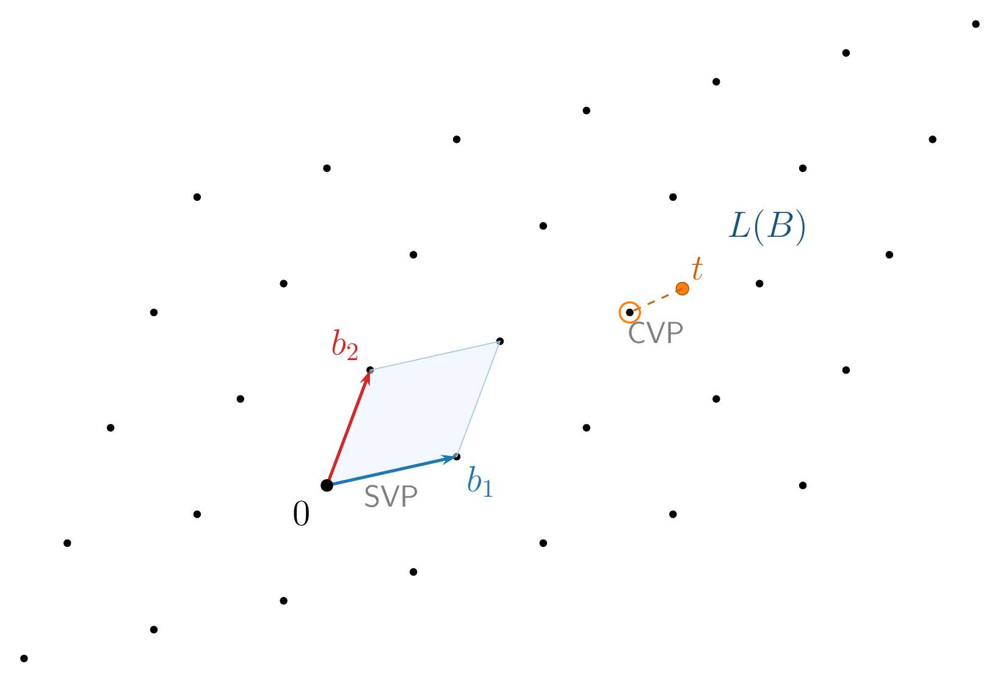
Modern cryptography relies on two fundamental problems over these structures:
- SVP (Shortest Vector Problem): find the shortest nonzero vector in the lattice.
- CVP (Closest Vector Problem): given an arbitrary point in space, find the nearest lattice point. If the exact nearest point is required, the problem is NP-hard. In its approximate version it’s no longer NP-hard, but the best known algorithms still have exponential cost in the lattice dimension \(n\).
CVP is at least as hard as SVP, and both are the foundation of lattice cryptography. In cryptography, the approximate versions are used — relaxed enough not to be NP-hard, but strict enough that no known algorithm, classical or quantum, can solve them in reasonable time. At the typical FHE dimensions (\(n \geq 1024\)), that’s intractable. This difficulty is what protects the data. But a lattice by itself doesn’t encrypt anything — we need to translate this geometric difficulty into a mechanism that allows encryption and operations.
- What is the difference between SVP and CVP? Why is CVP at least as hard as SVP?
- The security of FHE is based on the fact that lattice problems are hard “even for quantum computers.” What distinguishes these problems from those used by RSA (factorization) against quantum attacks?
5.2 From lattices to rings: LWE and RLWE
Once we understand that security resides in the difficulty of finding points in a lattice, we need a way to implement this efficiently. The Learning With Errors (LWE) scheme, which we’ll see in more detail in the chapter on lattice-based cryptography, translates lattice geometry to linear algebra. The secret key \(s\) is a vector of \(n\) integers, the public part includes a random \(n \times n\) integer matrix \(A\), and encrypting consists of computing:
\[b = A \cdot s + e \pmod{q}\]
where \(e\) is a vector of small errors — noise deliberately injected. Without that noise, recovering \(s\) from \(A\) and \(b\) would be freshman linear algebra (Gaussian elimination). But with the error, \(b\) is a point near the lattice generated by the columns of \(A\), but not exactly on the lattice — and finding the nearest point is CVP. That’s the trap: the noise turns a trivial problem into an intractable one.
LWE works, but has a performance problem: each operation on a ciphertext involves a matrix-vector product — \(O(n^2)\) integer multiplications. With the dimensions needed for FHE (\(n \geq 1024\)), that’s millions of operations per homomorphic addition or multiplication. Moreover, the matrix \(A\) has \(n^2\) integers: with \(n = 8192\), storing it requires more than 67 million integers. Too slow and heavy to be practical.
The solution is to replace vectors and matrices with polynomials. A polynomial of degree less than \(n\) — for example, \(3x^2 + 5x + 1\) — is nothing more than a vector of \(n\) coefficients (\(1, 5, 3, 0, \ldots, 0\)) written in a different notation. So far we haven’t gained anything. But if we restrict the polynomials to a specific ring, something remarkable happens.
What is that ring? In algebraic notation it’s written \(R_q = \mathbb{Z}_q[x]/(x^n + 1)\), polynomials with integer coefficients modulo \(q\) (i.e., \(\mathbb{Z}_q[x]\), the same modular arithmetic as in LWE), with the additional restriction that \(x^n + 1 = 0\), meaning \(x^n = -1\). This restriction ensures the degree never grows: when multiplying two polynomials, if any term exceeds degree \(n-1\), the rule “folds” it back into the range \([0, n-1]\). Let’s see an example with \(n = 4\) and \(q = 7\). We start with two polynomials in \(R_7\):
\[a(x) = 2x^3 + x + 3, \qquad b(x) = x^3 + 4x^2 + 1\]
When multiplied, terms of degree greater than 3 appear. The ring’s trick is to apply \(x^4 = -1\): for example, \(2x^3 \cdot x^3 = 2x^6 = 2 \cdot x^2 \cdot x^4 = -2x^2 = 5x^2 \pmod{7}\). After folding all terms, the result is \(2x^3 + 3x^2 + 2\) — always a polynomial with 4 coefficients, just like LWE vectors. The crucial point is that this restriction has exactly the same effect as restricting the set of possible matrices \(A\) to negacyclic matrices (whose rows are rotations of a single vector with alternating signs). That is, all the information in the matrix \(A\) is encoded in the coefficients of a single polynomial \(a(x)\).
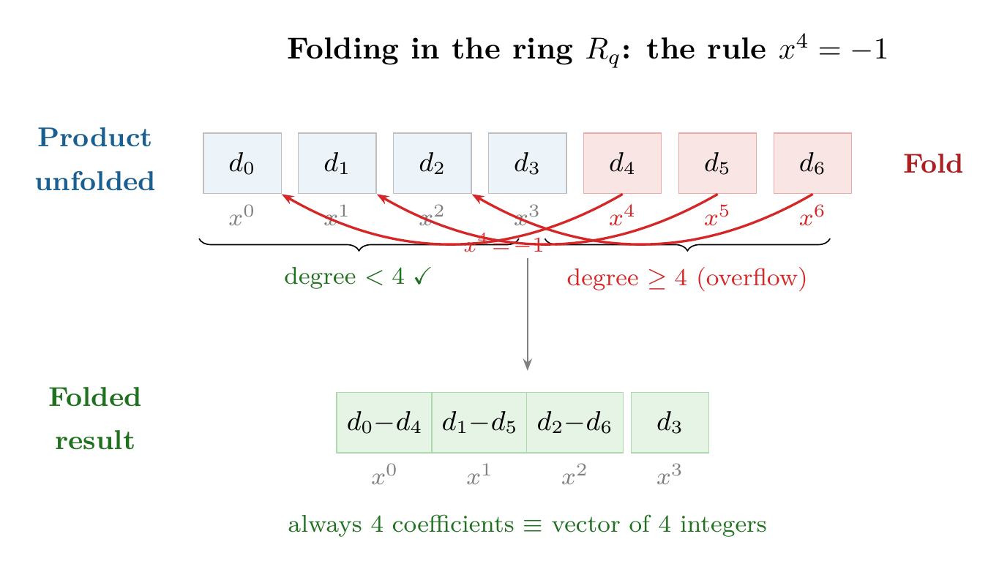
The result is Ring Learning With Errors (RLWE): the version of LWE where vectors and matrices are replaced by polynomials in \(R_q\). A single polynomial equation:
\[b(x) = a(x) \cdot s(x) + e(x) \pmod{q,\; x^n + 1}\]
encodes the same information as the LWE matrix system. The gain is twofold. First, in storage: the LWE matrix \(A\) has \(n^2\) integers; the RLWE polynomial \(a(x)\) has only \(n\). With \(n = 8192\), we go from 67 million integers to 8192 — an \(8{,}000\times\) reduction in key size. Second, in speed: multiplying a matrix by a vector costs \(O(n^2)\); multiplying two polynomials in \(R_q\) costs only \(O(n \log n)\) thanks to the Number Theoretic Transform (NTT), the modular version of the FFT (Fast Fourier Transform). With \(n = 8192\), that’s ~100,000 operations versus ~67 million — three orders of magnitude faster. This efficiency is what makes FHE viable.
The name RLWE summarizes the mechanism. Ring refers to the polynomial ring — the source of efficiency. Learning With Errors describes the underlying problem: given \(b = a \cdot s + e\), can one “learn” the secret \(s\)? Without the error, basic linear algebra would suffice. With it, recovering \(s\) is equivalent to solving CVP in a lattice formed by polynomials — exactly the difficulty from the previous subsection.
CKKS is built directly on RLWE, and the connection is deep. Unlike other schemes that treat the error \(e\) as something to be eliminated entirely, CKKS interprets it as a precision error — similar to what happens in floating-point arithmetic. Since RLWE already includes an inherent error, the scheme reuses it to represent real numbers as approximate values: the cryptographic noise and the approximation error are managed together through the rescaling techniques we’ll see in Section 5.4.
The parameter poly_modulus_degree in the code sets exactly that \(n\). It must be a power of 2 (4096, 8192, 16384…) because the NTT — like the FFT — requires power-of-2 sizes. Choosing \(n\) involves a trade-off: a larger \(n\) gives more security and more parallelism slots (\(N_{\text{slot}} = n/2\) values per ciphertext, as we’ll see in Section 5.6), but each operation on longer polynomials is proportionally more expensive. Doubling \(n\) from 8192 to 16384 doubles \(N_{\text{slot}}\), but also (approximately) doubles the time for each addition, multiplication, or rotation.
This polynomial representation has a direct cost in memory. Each ciphertext is a pair of polynomials \((a, b)\), each with \(n\) integer coefficients modulo \(q\). The total size is \(2 \times n \times \lceil\log_2 q\rceil\) bits. With our example parameters (\(n = 8192\) and a total modulus \(q \approx 2^{200}\), the sum of the 60+40+40+60 bits from coeff_mod_bit_sizes), a single ciphertext occupies approximately \(2 \times 8192 \times 200 / 8 \approx 400\) KB. A plaintext double occupies 8 bytes; its encrypted version, 400,000 bytes — a \(50{,}000\times\) expansion. Packing (Section 5.6) amortizes this cost by packing up to \(N_{\text{slot}} = n/2 = 4096\) values into a single ciphertext, reducing the cost to about 100 bytes per value. But the additional cryptographic keys — especially the Galois and bootstrapping keys — can reach hundreds of megabytes or even gigabytes, as we’ll see later. With the mathematical structure in place — an efficient ring, noise that guarantees security, NTT that accelerates operations — the central piece remains: how is a specific message encrypted, and why does adding or multiplying ciphertexts produce the correct result?
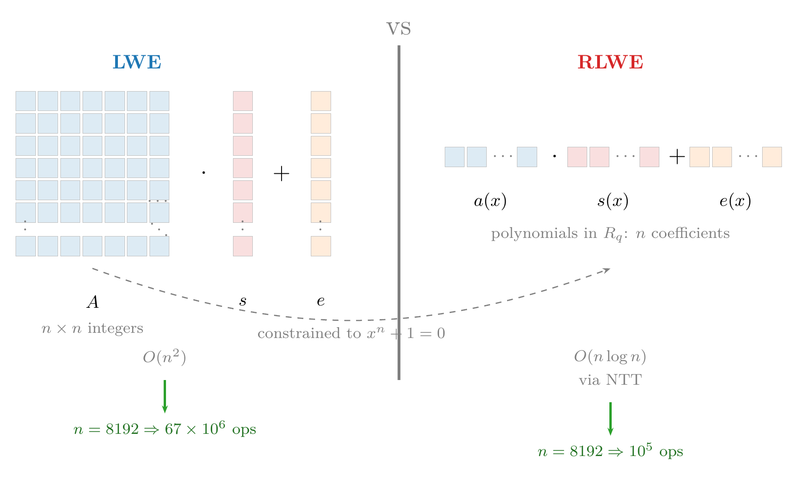
- In standard LWE, the public part is an \(n \times n\) integer matrix \(A\). In RLWE it is replaced by a single polynomial of \(n\) coefficients. What algebraic property of the ring \(R_q\) enables this compression? What speed gain does it provide?
- Ask an LLM: “In lattice-based cryptography, why is solving RLWE considered at least as hard as solving the closest vector problem (CVP)? Explain the reduction intuitively.” Verify that it mentions the role of the noise \(e\) in the connection to CVP.
5.3 Encryption and homomorphic operations
We now have the algebraic structure — the ring \(R_q\) with its efficient operations via NTT — and we know that security resides in the difficulty of solving lattice problems. Now let’s see how this machinery is used to encrypt messages and, above all, why arithmetic operations on ciphertexts produce correct results without needing to decrypt.
The encryption mechanics are elegant. The secret key \(s\) is a polynomial with small coefficients. To encrypt a message \(m\), a random polynomial \(a\) and a small error \(e\) are generated — noise deliberately injected to make the decryption problem harder — producing a pair:
\[\text{Enc}(m) = (a,\; b = a \cdot s + e + m)\]
Why is \(a\) necessary? Wouldn’t it suffice to encrypt as \(c = s + e + m\) and decrypt as \(c - s\)? The problem is that without \(a\), if someone intercepts two ciphertexts \(c_1 = s + e_1 + m_1\) and \(c_2 = s + e_2 + m_2\), they can subtract them: \(c_1 - c_2 \approx m_1 - m_2\). The key \(s\) cancels out and the attacker learns the difference between the messages. The random polynomial \(a\), different in each encryption, acts as a mask that makes each ciphertext indistinguishable from random noise. Anyone who knows \(s\) decrypts — \(\text{Dec}(c) = b - a \cdot s = e + m\) — and recovers \(m\) (the error \(e\) is small and can be removed). Without knowing \(s\), the presence of \(a\) and \(e\) makes recovering \(m\) equivalent to solving a lattice problem.
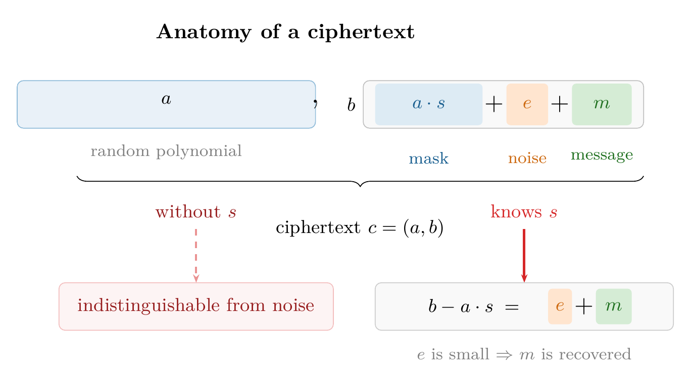
The homomorphic property arises naturally. Let’s see why. Let two ciphertexts \(c_1 = (a_1, b_1)\) and \(c_2 = (a_2, b_2)\) encrypt \(m_1\) and \(m_2\) respectively, where \(b_i = a_i \cdot s + e_i + m_i\).
Addition. Simply add component by component:
\[\text{Enc}(m_1 + m_2) = c_1 + c_2 = (a_1 + a_2,\; b_1 + b_2)\]
If you decrypt this result with the key \(s\), you get:
\[\begin{aligned} \text{Dec}(c_1 + c_2) &= (b_1 + b_2) - (a_1 + a_2) \cdot s \\ &= (e_1 + e_2) + (m_1 + m_2) \end{aligned}\]
That is, the decrypted message is \(m_1 + m_2\) with an error of \((e_1 + e_2)\). The error grows, but only as a sum — if each \(e_i\) is small, the sum remains small.
Addition with a plaintext constant. What happens if one of the operands is not encrypted? Let \(c = (a, b)\) be a ciphertext encrypting \(m\), and \(k\) a plaintext constant. The addition is even simpler:
\[\text{Enc}(m + k) = c + k = (a,\; b + k)\]
Only the second component is modified. When decrypting:
\[\text{Dec}(c + k) = (b + k) - a \cdot s = e + m + k\]
The error \(e\) doesn’t change at all — the constant is added directly to the message without affecting the noise. This is the cheapest operation in the repertoire: there is zero error growth.
Multiplication by a constant. Now let’s multiply the ciphertext \(c = (a, b)\) by a plaintext constant \(k\):
\[\text{Enc}(k \cdot m) = k \cdot c = (k \cdot a,\; k \cdot b)\]
When decrypting:
\[\begin{aligned} \text{Dec}(k \cdot c) &= k \cdot b - k \cdot a \cdot s = k \cdot (e + m) \\ &= k \cdot m + k \cdot e \end{aligned}\]
The message is \(k \cdot m\) — correct — and the error goes from \(e\) to \(k \cdot e\), proportional to the constant. The noise grows, but in a controlled way. Moreover, multiplying by a constant simply scales both components of the pair: the \((a, b)\) structure is preserved intact, with no additional complications. We’ll see shortly that multiplication between two ciphertexts is much more costly — it requires extra machinery and consumes part of the scheme’s budget.
This explains why in the earlier recipes we insisted that operations like features_cifrados * pesos (Recipe 3) or consulta_cifrada * scores (Recipe 6) were “cheap”: when multiplying a ciphertext by plaintext values, the cost is minimal. Only multiplication between two ciphertexts — which we’ll see next — has a significant cost.
Multiplication between ciphertexts. Operations with plaintext constants were straightforward — component-wise additions and multiplications, with no extra cost. For multiplication between two ciphertexts there’s no such simple trick, but the question can be stated cleanly.
We want to define \(\text{Enc}(m_1 \cdot m_2) = c_1 \otimes c_2 = (a, b)\) — we use \(\otimes\) instead of \(\cdot\) because, as we’ll see, this operation on ciphertexts is structurally different from constant multiplication — such that \(\text{Dec}(c_1 \otimes c_2) = b - a \cdot s \approx m_1 \cdot m_2\). The question is: what must \(a\) and \(b\) be?
To find out, we work backwards. We know that decrypting each ciphertext gives \(b_i - a_i \cdot s = m_i + e_i\), so the product of both decryptions is \((m_1 + e_1)(m_2 + e_2) \approx m_1 \cdot m_2\) — exactly what we want. We expand \((b_1 - a_1 s)(b_2 - a_2 s)\) to see what form it takes:
\[(b_1 - a_1 s)(b_2 - a_2 s) = \underbrace{b_1 b_2}_{d_0}\; - \;\underbrace{(a_1 b_2 + a_2 b_1)}_{d_1} \cdot s\; + \;\underbrace{a_1 a_2}_{d_2} \cdot s^2\]
The three coefficients — \(d_0 = b_1 b_2\), \(d_1 = a_1 b_2 + a_2 b_1\), and \(d_2 = a_1 a_2\) — are computed exclusively from the public components, without needing \(s\). So far so good.
But there’s a problem: the expression doesn’t have the form \(b - a \cdot s\) that we need for decryption with a pair. It has three terms and depends on \(s^2\). We can’t find a pair \((a, b)\) that fits directly — we need to eliminate that \(s^2\).
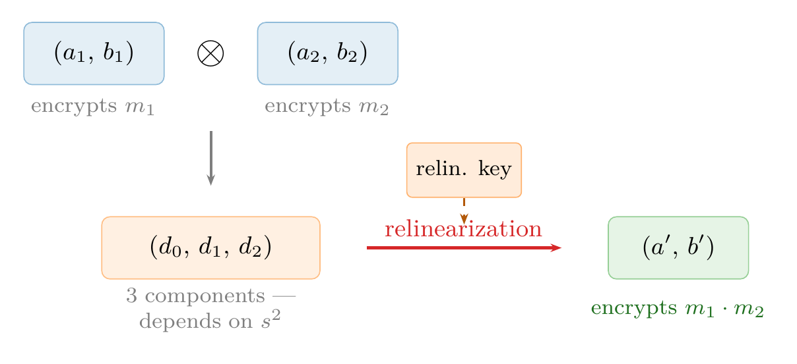
This is where relinearization comes in. A relinearization key is published in advance: an encryption of \(s^2\) under the key \(s\) itself, that is, a pair \((a_r, b_r)\) where \(b_r \approx a_r \cdot s + s^2\). With it, we absorb the \(d_2 \cdot s^2\) term and construct the pair we were looking for:
\[a = d_1 + d_2 \cdot a_r, \qquad b = d_0 + d_2 \cdot b_r\]
Does it work? Let’s check: \(b - a \cdot s = d_0 + d_2 b_r - (d_1 + d_2 a_r) s = d_0 - d_1 s + d_2(b_r - a_r s) \approx d_0 - d_1 s + d_2 s^2\), which is exactly the original product. Now we have a pair in the standard form that decrypts with just \(s\) and produces \(m_1 \cdot m_2\).
This answers the question we posed: homomorphic multiplication is \(\text{Enc}(m_1 \cdot m_2) = c_1 \otimes c_2 = (a, b)\) with \(a\) and \(b\) defined above. In libraries like TenSEAL, relinearization is applied internally every time you multiply two ciphertexts, so the user simply writes c1 * c2.
But once we can multiply, a second problem appears: the error grows much more rapidly. Notice that if we substitute \(b_i = a_i s + e_i + m_i\), the decrypted product is:
\[(e_1 + m_1)(e_2 + m_2) = m_1 \cdot m_2 + e_1 \cdot m_2 + e_2 \cdot m_1 + e_1 \cdot e_2\]
The result contains \(m_1 \cdot m_2\) — what we wanted — but the resulting error \(e_{\text{mult}} = e_1 \cdot m_2 + e_2 \cdot m_1 + e_1 \cdot e_2\) is much larger than in addition. The errors no longer add but multiply with the messages, growing much faster. After a few chained multiplications, the accumulated error can exceed the message and decryption produces garbage. This is the fundamental reason why FHE has a limited operation budget.
There’s a subtle point worth making explicit: the only two operations the scheme provides natively are polynomial addition and multiplication. The algebraic structure of RLWE — a polynomial ring — only defines these two operations. Any other computation — comparisons (\(x > y\)), maximums, minimums, nonlinear functions like sigmoid or ReLU — must be approximated by a sufficiently high-degree polynomial, and each multiplication of that polynomial consumes a level from the budget. A simple if (x > 0) that in normal code is a single instruction requires evaluating a polynomial of degree 10 to 30 that approximates the sign function in FHE, consuming between 4 and 10 multiplicative levels. This restriction — sometimes called the arithmetic circuit model — is what turns programming on encrypted data into a careful design exercise, as we saw in Chapter 4. And each of those multiplications has a cost we haven’t quantified yet: the accumulated noise.
- In RLWE encryption, why is the random polynomial \(a\) necessary in each encryption? What attack does its absence enable?
- Explain in your own words why homomorphic addition is “cheap” (the error grows linearly) while multiplication is “expensive” (the error grows much faster).
- What role does relinearization play after a homomorphic multiplication? What would happen if it weren’t applied?
- CKKS doesn’t support conditional branches. How would you implement the following logic using CKKS? Roughly how many multiplicative levels does it consume?
if (m < 0) then m = -m
5.4 Noise and levels
We just saw that each multiplication between ciphertexts makes the error grow dramatically — errors multiply with the messages instead of simply adding up. And we noted that, after a few chained multiplications, the error can exceed the message and decryption produces garbage. But exactly how many operations can we chain, and how does the scheme control that deterioration?
The key is the modulus \(q\). All the scheme’s arithmetic operations are performed modulo a large number \(q\), called the ciphertext modulus. After encrypting a fresh message, the error \(e\) is small — on the order of a few bits. Decryption works correctly as long as the accumulated error is less than \(q/2\). We can think of \(\log_2(q)\) — the number of bits of \(q\) — as the size of the “fuel tank,” and \(\log_2(e)\) as the fuel already consumed.
How much does the error grow in each multiplication? In CKKS, messages are not stored directly but scaled by a factor \(\Delta\) (in our code, \(\Delta = 2^{40}\)). A ciphertext storing the message \(m\) internally contains \(\Delta \cdot m + e\), where \(e\) is the error. When multiplying two ciphertexts:
\[(\Delta \, m_1 + e_1)(\Delta \, m_2 + e_2) = \Delta^2 \, m_1 m_2 + \Delta(m_1 e_2 + m_2 e_1) + e_1 e_2\]
The desired term is \(\Delta^2 m_1 m_2\) and the error is \(\Delta(m_1 e_2 + m_2 e_1) + e_1 e_2\). Since \(e_1, e_2\) are small, the term \(e_1 e_2\) is negligible and the dominant error is \(\Delta(m_1 e_2 + m_2 e_1)\). There are two problems: the message scale has gone from \(\Delta\) to \(\Delta^2\), and the error has been multiplied by \(\Delta\).
Rescaling solves both in one stroke: we divide the entire ciphertext by \(\Delta\):
\[\frac{\Delta^2 m_1 m_2 + \Delta(m_1 e_2 + m_2 e_1)}{\Delta} = \Delta \, m_1 m_2 + (m_1 e_2 + m_2 e_1)\]
After rescaling, the message is back to being scaled by \(\Delta\) — the standard form — and the error is now \(e_{\text{resc}} = m_1 e_2 + m_2 e_1\). The extra 40 bits of error introduced by the multiplication have been eliminated by dividing by \(\Delta = 2^{40}\). The resulting error is larger than the originals \(e_1, e_2\) (by the factor \(m_i\)), but it no longer grows catastrophically. Without rescaling, each multiplication would add 40 bits of error and in two or three operations it would overflow \(q\); with rescaling, the error grows moderately and what gets consumed is a link of the modulus chain.
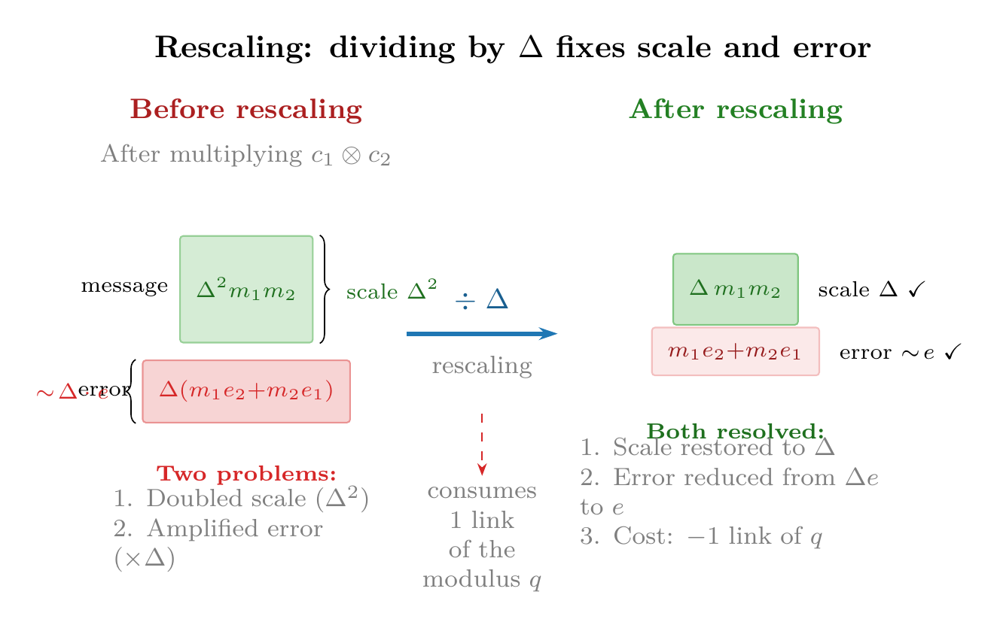
Specifically, a leveled scheme manages this budget with a chain of decreasing moduli \(q_0 > q_1 > \cdots > q_L\). Each rescaling divides the ciphertext by \(\Delta\) and reduces the modulus to the next in the chain: \(q_i \to q_{i+1} = q_i / \Delta\). When the links run out, there are no more levels to multiply.
This is exactly what coeff_mod_bit_sizes configures in the code. Let’s see it with our example:
coeff_mod_bit_sizes = [60, 40, 40, 60]- The last value (60 bits) is an auxiliary modulus reserved for the relinearization we saw earlier — the step that converts the triplet \((d_0, d_1, d_2)\) into a pair. The library needs an extra large-sized modulus to execute that operation with precision, but it doesn’t count as a multiplication level.
- The first value (60 bits) sets the initial scale \(\Delta\) of the encryption. Recall that CKKS stores \(\Delta \cdot m + e\); a larger \(\Delta\) (more bits) gives more decimal precision in real numbers, but takes up more space in the total modulus. A value of 60 bits provides approximately 18 decimal digits of precision.
- The intermediate values (40, 40) are the links of the rescaling chain: each one represents an available multiplication level. With two 40-bit values, the scheme supports up to two chained multiplications.
The number 40 is not arbitrary: it matches the global_scale = 2**40 we set when creating the context. Each rescaling divides by the scale (\(2^{40}\)), which requires consuming exactly one 40-bit modulus from the chain.
How does an engineer decide these values? The rule of thumb is: count how many chained multiplications your circuit needs (call it \(L\)) and configure \(L\) intermediate values of 40 bits, plus a 60 at the beginning and another at the end. To compute a mean (sum + division by constant) a single multiplication suffices, so \(L = 1\) would be enough. Our example uses \(L = 2\) for headroom. If you needed, for example, to compute a degree-4 polynomial, you’d use [60, 40, 40, 40, 40, 60] — four intermediate levels. More levels imply a larger total modulus \(q\), which in turn requires a larger poly_modulus_degree to maintain security.
Why? Recall that RLWE security rests on the fact that the error \(e\) injected during encryption is small enough to be removed during decryption, but large enough to “hide” the message from an attacker. An attacker trying to break the scheme must distinguish an RLWE ciphertext — \(b = a \cdot s + e + m\) — from a pair of purely random polynomials. The larger \(q\) is relative to the error \(e\), the easier it becomes: the error occupies a smaller fraction of the space of possible values modulo \(q\), and the ciphertext increasingly resembles an exact product \(a \cdot s\) without noise, which would be trivial to invert. Increasing \(N\) — the dimension of the underlying lattice — compensates for that weakening by making the problem exponentially harder for the same reason we saw when introducing RLWE: the best lattice reduction algorithms have exponential cost in the dimension. As a rule of thumb, the security level is approximately proportional to \(N / \log_2 q\): if you double the size of \(q\) by adding levels to the chain, you need to increase \(N\) proportionally. With 4 levels, the chain [60, 40, 40, 40, 40, 60] totals 280 bits of modulus versus the 200 in our example, and to maintain 128 bits of security you’ll typically need \(N = 16384\) instead of 8192.
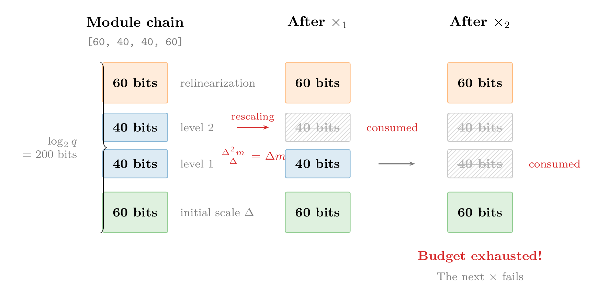
But if the budget is finite, something doesn’t add up: we call the scheme fully homomorphic, and yet it only allows a fixed number of multiplications — not very different, in principle, from the partial schemes we mentioned at the beginning of the chapter.
- Why is rescaling necessary after each multiplication in CKKS? What happens to the message scale if it’s not applied?
- For a circuit that computes \(a \cdot b + c \cdot d\), how many multiplication levels are needed? What
coeff_mod_bit_sizeswould you use?
5.5 Bootstrapping
We’ve traveled a path from lattices to RLWE, from encryption to homomorphic operations, and from noise growth to the modulus chain that manages it. But everything described so far defines a leveled scheme — capable of a prefixed number of multiplications. To deserve the name fully homomorphic, we need a way to restore the exhausted budget. That is the key contribution of Craig Gentry, which we already mentioned in the history of FHE: bootstrapping.
Suppose that after \(L\) multiplications we’ve exhausted the modulus chain: each rescaling has divided the modulus by \(\Delta\), leaving the ciphertext at the last link \(q_L = q_0 / \Delta^L\), with no levels left to keep operating. The error is small thanks to rescaling, but there are no more links to consume.
The bootstrapping idea is counterintuitive: we take that “exhausted” ciphertext and decrypt it homomorphically. That is, the decryption circuit itself (\(b - a \cdot s\)) is evaluated as an operation on ciphertexts. To do this, the secret key \(s\) is encrypted in advance under the key \(s\) itself and published as the bootstrapping key (BK). The system executes the decryption “inside the glove box” — returning to Gentry’s analogy from the beginning of the chapter: the exhausted ciphertext goes in, gets decrypted internally and re-encrypted, all without ever leaving the encrypted domain. The result is a fresh ciphertext — with the modulus restored to \(q_0\) and the full level budget — containing the same message.
Let’s see step by step how it works. We start from the exhausted ciphertext \(c = (a, b)\) at the last level \(L\), with modulus \(q_L\). We know that:
\[b - a \cdot s \equiv \Delta \, m + e \pmod{q_L}\]
where \(e\) is small thanks to accumulated rescaling. The values \(a\) and \(b\) are known — they are the ciphertext itself, which the server has in its hands. What it doesn’t know is \(s\).
Before starting any computation, the key owner has published a bootstrapping key (BK): a fresh encryption of the secret key \(s\) under the key \(s\) itself, but with the full modulus \(q_0\). Following the same encryption notation we defined earlier — \(\text{Enc}(m) = (a,\; b = a \cdot s + e + m)\) — the bootstrapping key is:
\[\text{BK} = \text{Enc}(s) = (a_{\text{bk}},\; b_{\text{bk}} = a_{\text{bk}} \cdot s + e_{\text{bk}} + s)\]
It’s exactly a normal encryption, except the “message” being encrypted is the key \(s\) itself. (Encrypting the key under itself requires an assumption called circular security; all current FHE schemes rely on it.) The crucial difference is that this encryption was generated with the full modulus \(q_0\), so it has its entire level budget intact.
Now the server can evaluate the decryption circuit homomorphically. Let’s see how, step by step. Recall that \(a\) and \(b\) — the components of the exhausted ciphertext — are concrete values, polynomials that the server has in its hands. All the information about the message \(m\) and the accumulated error \(e\) is encoded within those values, in the relationship \(b - a \cdot s \equiv \Delta m + e \pmod{q_L}\). The polynomials \(a\) and \(b\) themselves are just big numbers; the error doesn’t “live” in \(a\) or \(b\) separately, but in how they combine with the key \(s\).
But there’s a crucial detail in that “\(\pmod{q_L}\)”. What it means is that the integer value of \(b - a \cdot s\) — without reducing modulo anything — is not \(\Delta m + e\), but:
\[b - a \cdot s = \Delta \, m + e + k \cdot q_L\]
for some integer \(k\). When reducing modulo \(q_L\), the term \(k \cdot q_L\) disappears and only the residue \(\Delta m + e\) remains. When the ciphertext operated under modulus \(q_L\), that didn’t matter — the reduction was applied implicitly. But now that we’re going to switch to a larger modulus, that \(k \cdot q_L\) becomes a problem.
Step 1: Homomorphic decryption. The server uses \(a\) and \(b\) as known constants to operate on the BK. First, it multiplies the BK (which is a ciphertext containing \(s\)) by the constant \(a\). We already saw that multiplying a ciphertext by a constant preserves the message: if BK encrypts \(s\), then \(a \cdot \text{BK}\) encrypts \(a \cdot s\). This operation is cheap — it doesn’t consume a level because it’s not a multiplication between two ciphertexts. Then it subtracts from the constant \(b\). Adding a constant to a ciphertext simply adds that constant to the encrypted message. The result is:
\[b - a \cdot \text{BK} = \text{Enc}(b - a \cdot s) = \text{Enc}(\Delta \, m + e + k \cdot q_L)\]
This new ciphertext was generated from the BK, which has the full modulus \(q_0\). So it has plenty of levels to keep operating. But it contains \(\Delta m + e + k \cdot q_L\) — the message we want plus a spurious term \(k \cdot q_L\) that must be eliminated.
Step 2: Elimination of the \(k \cdot q_L\) term (homomorphic modular reduction). This is where the real cost of bootstrapping lies. We need to compute \((b - a \cdot s) \bmod q_L\) homomorphically to keep only \(\Delta m + e\). But modular reduction is not a polynomial operation — it cannot be expressed as a sequence of additions and multiplications. To evaluate it homomorphically, it must be approximated by a high-degree polynomial, which consumes multiple multiplication levels — typically between 10 and 20, depending on the desired precision.
Only after this second step do we obtain a fresh ciphertext under \(q_0\) that contains \(\Delta m + e\) — the clean message, without the \(k \cdot q_L\) term, and with the level budget partially restored.
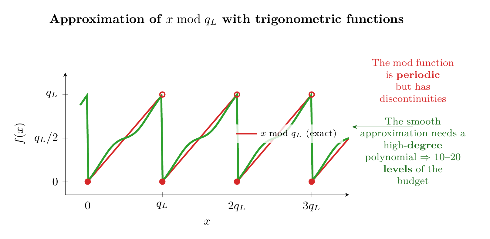
That’s why bootstrapping is expensive: Step 1 (\(b - a \cdot \text{BK}\)) is trivial, but Step 2 (the modular reduction) is a heavy computation that consumes a good portion of the newly restored levels.
It’s like draining an airplane’s fuel tank down to the reserve and, instead of landing, using that very reserve to power a pump that refills the main tank from an auxiliary one you’d been carrying on board.
In practice, a bootstrap takes on the order of one second — compared to the milliseconds of a normal operation — and the resulting ciphertext doesn’t recover all the levels, because the decryption circuit evaluation itself consumes part of the restored budget. For this reason, the preferred approach is to design the computation to fit within the level budget (leveled FHE) and resort to bootstrapping only when the circuit is too deep to dimension in advance.
In practice, the situation in CKKS is somewhat more complex: data is not stored directly as polynomial coefficients but encoded via a transform — which adds additional steps (CoeffsToSlots and SlotsToCoeffs) to the bootstrapping circuit. We’ll see that encoding in detail in the next section.
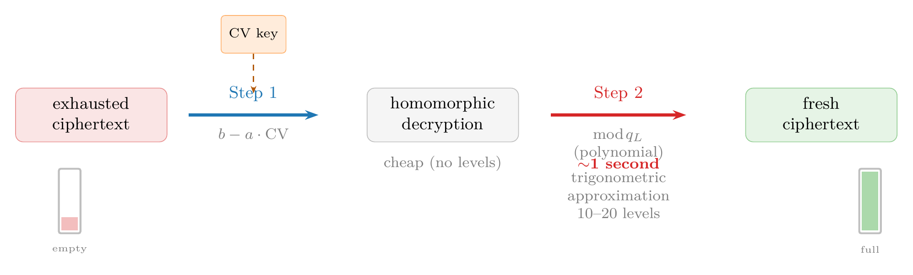
With or without bootstrapping, each homomorphic operation takes milliseconds — a cost paid per ciphertext. If each ciphertext contains a single data point, the performance is prohibitive for any real application.
- Why does bootstrapping need to encrypt the secret key under itself? What security assumption does this require?
- If bootstrapping is so expensive, why aren’t the parameters always dimensioned to avoid it? When is it unavoidable?
5.6 Packing and SIMD
If each homomorphic operation costs milliseconds regardless of how many data points the ciphertext contains, the key to acceptable performance is packing the maximum number of values into each one. Thanks to a technique called batching or packing, a single ciphertext can hold thousands of independent values, and a single operation on the ciphertext processes all of them in parallel. Packing is what turns FHE from a theoretical curiosity into a tool with acceptable performance. But how do thousands of numbers fit inside a single polynomial? The answer connects the algebraic structure of the ring \(R_q\) with an idea we already know: the Fourier transform.
To understand why packing is necessary, consider the naive alternative. We want to encrypt the five salaries \([3200, 4100, 2800, 5500, 3900]\). The most direct way would be to encode each value as a constant polynomial — \(m(x) = 3200\), \(m(x) = 4100\), etc. — and encrypt each one separately. The problem is that each ciphertext is a pair of polynomials of degree \(N - 1 = 8191\), with their 8192 integer coefficients modulo \(q\): about 400 KB. Of those 8192 coefficients, only the constant term carries useful information; the other 8191 are zeros. For five salaries we’d need five independent ciphertexts — 2 MB total — and five separate operations for any computation. A polynomial with 8192 coefficients carrying a single number is an absurd waste, like chartering an 18-wheeler to deliver a letter.
The algebraic structure of \(R_q\) offers something much better: packing the five values — or up to \(N/2 = 4096\) — into a single polynomial, so that one operation processes them all at once. But the data isn’t placed in the polynomial’s coefficients: it’s encoded in its evaluations at specific points in the complex plane.
From coefficients to slots. Recall that a ciphertext lives in the ring \(R_q\) we defined earlier (\(x^N + 1 = 0\)): a polynomial \(m(x)\) of degree less than \(N\) with integer coefficients modulo \(q\). At first glance, this polynomial has \(N\) coefficients and that’s it — there are no “independent positions” where data can be placed. But something interesting happens when we evaluate that polynomial at specific points — an operation called canonical embedding in algebra.
The polynomial \(x^N + 1\) has \(N\) complex roots: \(\omega_k = e^{i\pi(2k+1)/N}\) for \(k = 0, 1, \ldots, N-1\). These are points equally distributed on the unit circle of the complex plane — exactly the same kinds of roots that appear in the FFT. Evaluating \(m(x)\) at those \(N\) roots produces \(N\) complex numbers. But since the coefficients of \(m(x)\) are real (integers), the evaluations at conjugate roots are also conjugates: \(m(\bar{\omega}_k) = \overline{m(\omega_k)}\). The roots group into \(N/2\) conjugate pairs, and each pair contributes a single independent complex value. The \(N/2\) resulting complex values are the slots.
Each slot has a real and an imaginary part, so in principle one could pack up to \(N\) real numbers — \(N/2\) in the real parts and \(N/2\) in the imaginary parts. In practice, CKKS packs \(N_{\text{slot}} = N/2\) real values (one per slot, using only the real part), because mixing real and imaginary parts complicates error management. With poly_modulus_degree = 8192, we have \(N_{\text{slot}} = 4096\) slots available.
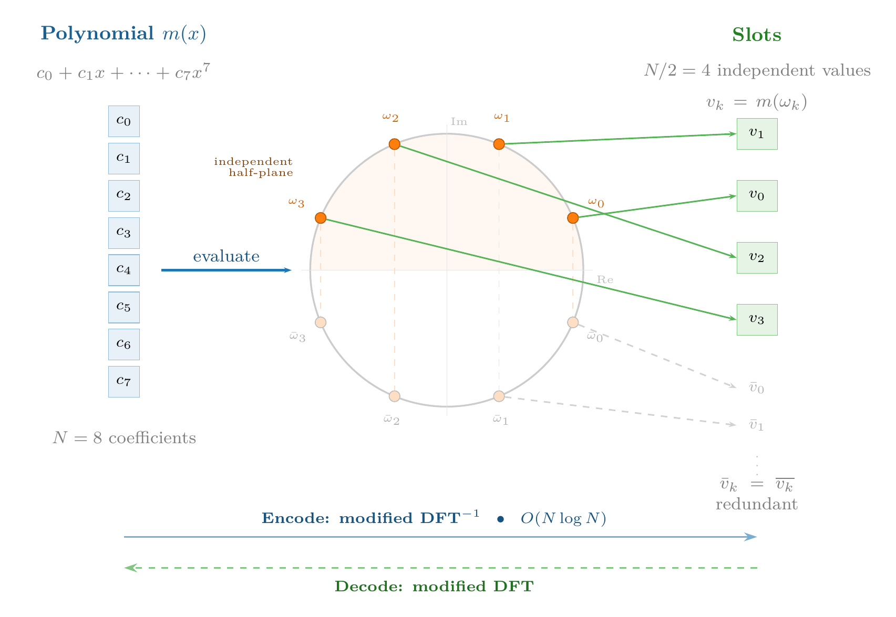
Encoding a data vector — for example, the five salaries \([3200, 4100, 2800, 5500, 3900]\) — consists of finding the polynomial \(m(x)\) of degree \(N-1\) whose evaluations at the \(N/2\) roots match those values. It’s exactly an inverse transform: given the values in the “frequency domain” (the slots), we compute the signal in the “time domain” (the polynomial’s coefficients). The library does this internally with a variant of the inverse DFT, which costs \(O(N \log N)\) — the same complexity as the NTT we already use for polynomial multiplication. The five salaries are placed in the first 5 of the 4096 slots; the remaining 4091 are set to zero.
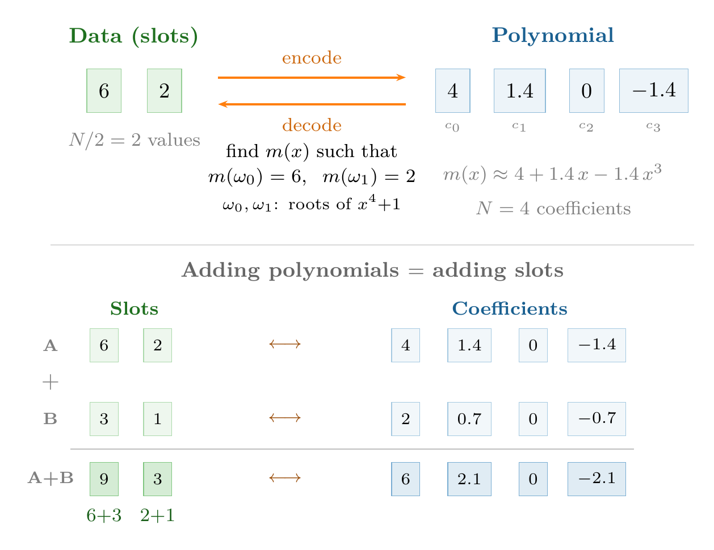
Why does the parallelism work? The key is that operations in the ring \(R_q\) — polynomial addition and multiplication — automatically translate into element-wise operations on the slots. If \(m_1(x)\) encodes the vector \((v_1, v_2, \ldots, v_{N/2})\) and \(m_2(x)\) encodes \((w_1, w_2, \ldots, w_{N/2})\), then:
- \(m_1(x) + m_2(x)\) encodes \((v_1 + w_1,\; v_2 + w_2,\; \ldots,\; v_{N/2} + w_{N/2})\)
- \(m_1(x) \cdot m_2(x)\) encodes \((v_1 \cdot w_1,\; v_2 \cdot w_2,\; \ldots,\; v_{N/2} \cdot w_{N/2})\)
This is a direct consequence of the algebraic structure: evaluating a polynomial at a point is a ring homomorphism — if \(f(\omega) = v\) and \(g(\omega) = w\), then \((f+g)(\omega) = v+w\) and \((f \cdot g)(\omega) = v \cdot w\). A single operation on the polynomial is equivalent to \(N/2\) independent operations on the data — the same idea as Single Instruction, Multiple Data (SIMD) instructions in a modern processor.
The analogy with SIMD is precise. In a CPU with AVX-512 instructions, a 512-bit register stores 8 doubles of 64 bits, and a VADDPD instruction adds all 8 pairs in a single cycle. In FHE, the ciphertext is the “register” and stores up to 4096 values; a homomorphic addition processes them all at once. The difference is the scale of the cost: the AVX instruction takes a nanosecond; the homomorphic addition, milliseconds. But the parallelism is the same: the cost doesn’t depend on how many slots are occupied, since one polynomial operation is executed regardless of how much data the ciphertext contains.
Economics of packing. Without packing, each ciphertext stores a single value and occupies ~400 KB. Encrypting 4096 values would require 4096 ciphertexts — 1.6 GB — and 4096 operations to add them. With packing, the 4096 values fit in a single 400 KB ciphertext, and a single addition processes them all. The amortized cost drops from 400 KB to ~100 bytes per value, and the number of operations is reduced by a factor of \(N/2\). It’s this reduction that allows applications like encrypted regression (Recipe 3) or semantic search (Recipe 6) to be viable in practice.
In our code, when we write ts.ckks_vector(contexto, salarios), the library internally executes that encoding: it transforms the Python vector [3200, 4100, 2800, 5500, 3900] into a polynomial of degree 8191 whose evaluations at the roots of \(x^{8192}+1\) reproduce those five values in the first slots. The programmer doesn’t need to think about complex roots or transforms — just about vectors and arithmetic operations.
Now, packing has a fundamental limitation: it only allows slot-by-slot operations. Adding or multiplying two encrypted vectors works directly — each slot is processed independently. But what happens when we need to combine values from different slots? For example, to compute salarios_cifrados.sum() we need to add the five values that sit in separate slots. That requires moving data between slots — an operation that can’t be achieved with polynomial additions or multiplications, and that needs a completely different mechanism: rotations.
- Why is the number of slots \(N/2\) and not \(N\)? What property of the roots of \(x^N+1\) explains this?
- In our example,
ts.ckks_vector(contexto, [3200, 4100, 2800, 5500, 3900])places 5 values in 4096 slots. What do the remaining 4091 slots contain? Does it affect the cost of operations? - In CKKS, bootstrapping needs to apply the modular reduction on each slot independently, but the homomorphic decryption produces the polynomial in its coefficient representation. Why is an additional step (CoeffsToSlots) needed before the modular reduction? What type of operation is it and what is its cost?
5.7 Rotations
Element-wise operations — slot-by-slot additions and multiplications — are the basis of SIMD parallelism in FHE. But many useful computations need to combine values that sit in different slots of the same ciphertext. Computing the mean of an encrypted vector requires summing all its elements; a matrix multiplication requires dot products between rows and columns; a convolution requires shifting and accumulating. All these operations require moving data between vector positions — exactly what rotations do.
Before seeing how rotations are implemented in the scheme — which involves automorphisms on polynomials and additional keys — it’s worth understanding the idea at the vector level, without worrying yet about the underlying cryptographic machinery.
Cyclic shift. A rotation by \(k\) positions shifts all slots in the vector \(k\) positions to the left, cyclically: the value that was in slot \(i\) moves to slot \(i - k\), and those that “fall off” one end reappear at the other. With four slots as an example:
\[\text{Rot}([a, b, c, d],\; 1) = [b, c, d, a]\]
The datum \(a\) from slot 0 moves to slot 3; the datum \(b\) from slot 1 moves to slot 0, and so on. It’s a circular shift, not a loss of data — all values remain in the ciphertext, just in different positions.
Summation via rotation tree. To sum all elements of an encrypted vector, there is no “sum all slots” operation — remember that the scheme only offers polynomial additions and multiplications. The solution is to rotate and add repeatedly. Let’s illustrate with 4 slots:
\[[a, b, c, d] \xrightarrow{+\;\text{Rot}(\cdot,2)} [a{+}c,\; b{+}d,\; c{+}a,\; d{+}b] \xrightarrow{+\;\text{Rot}(\cdot,1)} [a{+}b{+}c{+}d,\; \ldots]\]
In the first step, we rotate by 2 positions and add the result to the original: each slot accumulates the sum of two elements. In the second step, we rotate by 1 position and add again: each slot contains the sum of all four. In general, \(\log_2(N_{\text{slot}})\) steps suffice to sum the \(N_{\text{slot}}\) elements. With \(N_{\text{slot}} = 4096\), that’s 12 rotations and 12 additions — exactly what .sum() executes internally. The gain is substantial: without this trick, summing the values from \(N_{\text{slot}}\) slots would require \(N_{\text{slot}} - 1\) individual operations — one accumulation per slot. The rotation tree reduces that cost from \(O(N_{\text{slot}})\) to \(O(\log_2 N_{\text{slot}})\): with 4096 slots, from 4095 operations to just 24. The idea is the same one that turns a linear search into a binary search — divide the problem in half at each step: each iteration doubles the number of elements accumulated in each slot, and after \(\log_2 N_{\text{slot}}\) steps they all contain the total sum.
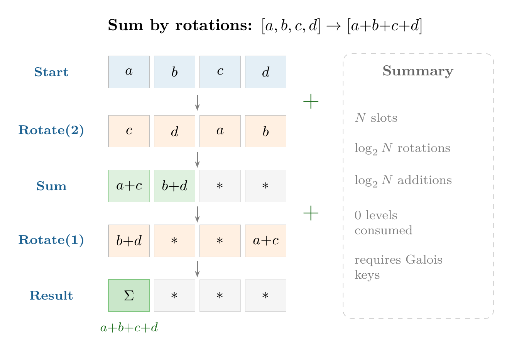
How does a rotation work on the polynomial? Here the mathematics of the ring \(R_q\) reveals an elegant trick. Recall that the slots are the evaluations of the polynomial \(m(x)\) at the roots \(\omega_0, \omega_1, \ldots, \omega_{N/2-1}\) of the polynomial \(x^N + 1\). Permuting the slots — moving the value from slot \(i\) to slot \(j\) — is equivalent to permuting the roots at which the polynomial is evaluated.
It turns out that certain substitutions of the polynomial’s variable — called automorphisms of the ring — do exactly that. The substitution \(x \to x^k\) (for certain odd values of \(k\)) reorders the roots of \(x^N + 1\) and therefore permutes the slots. Let’s work through the example in the diagram (Figure 5.13): \(N = 8\) (4 slots). If the ciphertext encodes \([a, b, c, d]\), applying the substitution \(x \to x^3\) to the underlying polynomial cyclically reorders the slots — for example, \([d, a, b, c]\). What happens at the coefficient level? Each term \(c_i x^i\) becomes \(c_i x^{3i}\), and when reducing modulo \(x^8 + 1\) — remember that \(x^8 = -1\) in our ring — the exponents “fold”: \(x^9 = x \cdot x^8 = -x\), \(x^{12} = x^4 \cdot x^8 = -x^4\), and so on. The result is a new polynomial with 8 coefficients — some with inverted signs — that when evaluated at the roots produces the same slot values but in rotated positions. Each exponent \(k\) generates a different permutation.
Why are special keys needed? Here’s the practical problem. Applying \(x \to x^k\) to the ciphertext \((a(x), b(x))\) produces \((a(x^k), b(x^k))\). This new pair still encrypts the rotated message, but under a different key: \(s(x^k)\) instead of \(s(x)\). It’s as if rotating the glove box’s gloves had changed the lock — the result is correct, but we can no longer open it with our original key.
To convert the ciphertext back to the key \(s(x)\), an additional step called key-switching is needed — conceptually similar to the relinearization we saw in multiplication, but converting from \(s(x^k)\) to \(s(x)\) instead of from \(s^2\) to \(s\). This step requires a precomputed key that “translates” between the two keys. That key is the Galois key for rotation by \(k\) positions, and we need a different one for each value of \(k\) we want to use.
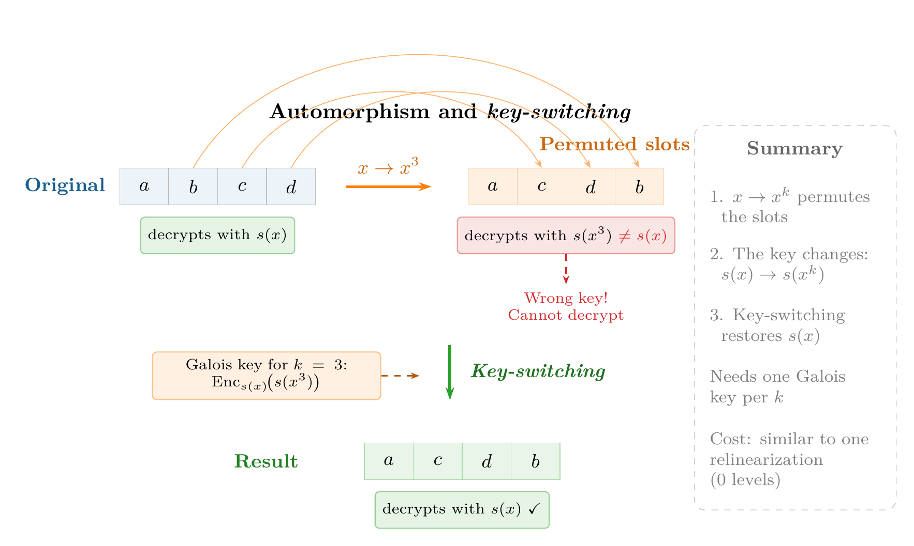
This explains why Galois keys are so voluminous: with \(N = 8192\), the \(\log_2(N/2) = 12\) rotations needed for a sum() require 12 Galois keys, each the size of a ciphertext (hundreds of kilobytes). If the circuit needs rotations by arbitrary amounts, the complete set can reach hundreds of megabytes. It’s worth seeing all the scheme’s keys together:
| Key | Generated | Enables | What happens without it? |
|---|---|---|---|
| Secret (\(s\)) | Automatically when creating the context | Decryption | Results cannot be recovered |
| Public | Automatically when creating the context | Encryption | Data cannot be encrypted (only the holder of \(s\) could) |
| Relinearization | Automatically in TenSEAL | Multiplication between ciphertexts | Ciphertext grows after each multiplication until unmanageable |
| Galois | Explicitly: generate_galois_keys() |
Rotations | sum() and any operation combining slots fails with an error |
In our code, ts.context(...) automatically generates the secret, public, and relinearization keys. Galois keys must be requested explicitly with generate_galois_keys(). Why aren’t they generated automatically too? Because they’re expensive: with \(N = 8192\), Galois keys occupy hundreds of megabytes and take several seconds to generate. If the circuit only needs element-wise additions and multiplications — without rotations — that cost is unnecessary. So the library leaves the decision to the programmer.
If Daniel forgot that line and tried to run salarios_cifrados.sum() — which internally needs to rotate and accumulate the vector’s slots — he’d get a runtime error. Element-wise additions and multiplications would work fine, but any operation that combines different slots of the vector would fail.
Cost of rotations. Rotations don’t consume multiplicative levels — they’re linear operations, like additions. But they’re not free: each rotation adds a small amount of noise (from the key-switching) and has a computational cost similar to a multiplication, because the key-switching step involves polynomial multiplications. In a circuit that combines packing with rotations, the designer must account for both the multiplicative depth and the number of rotations to correctly dimension the parameters.
Which operations benefit? The three primitives of the SIMD model — slot-by-slot addition, slot-by-slot multiplication, and rotation — cover a well-defined catalog of efficient operations. Elementwise operations (adding two encrypted vectors, multiplying them component-wise, scaling by a constant) are direct: a single polynomial operation across all slots in parallel, regardless of how many there are. Reductions — summing all elements, computing a mean, obtaining a norm — use the rotation tree at cost \(O(\log N_{\text{slot}})\) instead of the \(O(N_{\text{slot}})\) it would cost to operate slot by slot. Dot products combine both primitives: a SIMD multiplication (slot by slot) followed by a reduction via rotations. Matrix-vector multiplications decompose into dot products of each row with the vector. And neural network convolutions are implemented as sequences of rotations and accumulations. The general pattern is: any computation expressible as combinations of additions, multiplications, and shifts on vectors translates efficiently to FHE with packing and rotations. What falls outside are operations that depend on the value of the data — comparisons, conditionals, sorting — because the scheme doesn’t allow inspecting a ciphertext to decide which branch to take.
In summary: packing reduces the per-datum cost when operations are parallel and independent, and rotations allow combining data from different slots when the circuit requires it. Together, they transform the economics of FHE — the amortized cost drops by several orders of magnitude and complex operations like means, dot products, and regressions become viable. The price is the additional complexity of Galois keys and the careful design of rotation patterns. This encoding mechanism — polynomial → evaluation at roots → slots — also explains the CoeffsToSlots and SlotsToCoeffs transforms we saw in bootstrapping: they are exactly the steps of converting from polynomial coefficients to the slot representation and back. Everything above — lattices, RLWE, encryption, noise, bootstrapping, packing, and rotations — is the machinery of CKKS, the scheme we used in our code. But it’s not the only way to build an FHE scheme.
- To sum all elements of an encrypted vector with \(N_{\text{slot}} = 4096\) slots, how many rotations does the summation tree need? How many homomorphic additions?
- Why does each rotation position need its own Galois key? What happens to the encryption key when applying the substitution \(x \to x^k\)?
- Ask an LLM: “What is the difference between slot rotation in FHE and a rotation (circular shift) in a CPU SIMD register? How are they similar and how do they differ?”
5.8 Other encryption schemes
Everything we’ve seen — RLWE, noise, levels, rescaling, packing, and rotations — describes CKKS, the scheme we used in our code. But it’s not the only FHE scheme: there are four main schemes, and choosing among them is an engineering decision that depends on what type of data is being processed, what operations are needed, and what trade-offs are acceptable. Let’s look at each family — their mathematical foundations, their capabilities, and their strengths and limitations.
The RLWE family: BFV, BGV, and CKKS. All three schemes share the same foundations we’ve studied throughout this chapter: the RLWE polynomial ring with the constraint \(x^N + 1 = 0\), the same encryption structure (\(b = a \cdot s + e + m\)), the same noise mechanism, relinearization, SIMD packing, and rotations via automorphisms. All the machinery we’ve built — lattices, modulus chain, slots — is common to all three. All three exploit the same property of the polynomial \(x^N + 1\): its complex roots decompose the ring into independent channels (the slots we saw in Section 5.6), and that’s what enables SIMD parallelism. What differs is how they encode the message before encrypting it, and that determines what each can compute.
BFV and BGV work with exact integers. In BFV, the message is scaled by multiplying it by \(\lfloor q/t \rfloor\), where \(t\) is a plaintext modulus much smaller than \(q\). When decrypting, division by \(\lfloor q/t \rfloor\) followed by rounding eliminates the error exactly — with no approximation. BGV achieves the same result with an inverse strategy: instead of dividing the ciphertext by the scale after each multiplication (as CKKS does with rescaling), it reduces the message’s modulus. Both guarantee exact integer arithmetic, making them ideal for queries on encrypted databases or electronic voting — any scenario where an error of \(\pm 0.001\) is unacceptable. Their limitation: they can’t represent real numbers directly. A computation like the mean of five salaries would require representing the data as scaled integers and manually managing fixed-point arithmetic.
CKKS, the scheme in our code, made the opposite decision: accept a small approximation error in exchange for being able to encode real numbers in the slots via the canonical embedding we saw in Section 5.6. That concession — approximate rather than exact results — made it the reference scheme for machine learning and statistics on encrypted data, where an error on the order of \(10^{-7}\) is irrelevant compared to the inherent noise in the data itself. Its limitation is symmetric to that of BFV/BGV: it’s not suitable when results must be exact, as in financial cryptography or formal verification.
TFHE: Logic gates on the torus. TFHE completely abandons the SIMD model. Its mathematical foundation is different: instead of exploiting the roots of the polynomial \(x^N + 1\) to create independent slots (as the RLWE family does), it encrypts each bit as a position on the torus \(\mathbb{T} = \mathbb{R}/\mathbb{Z}\) — a circular structure where only the decimal part of the number matters — and evaluates the computation as a circuit of logic gates, one at a time (Figure 5.14). Each gate runs an automatic bootstrapping, which eliminates the concept of a “level budget”: the circuit can be arbitrarily deep without prior planning.
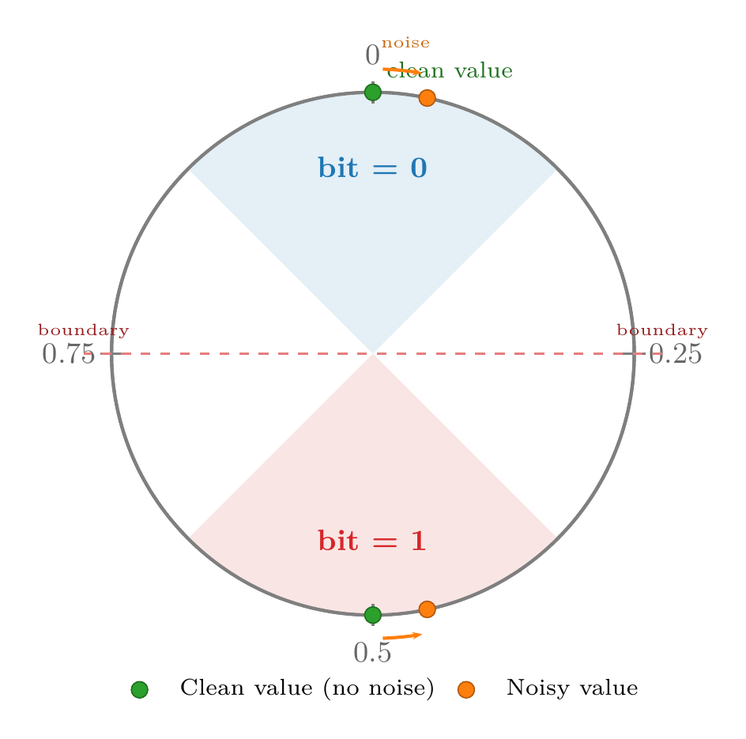
TFHE’s strength is exactly CKKS’s weakness: comparisons, conditionals, and control flow. An if (x > y) that in CKKS requires approximating the sign function with a high-degree polynomial — consuming many levels —, in TFHE is evaluated directly bit by bit. The trade-off: without SIMD, adding two 32-bit integers requires chaining hundreds of logic gates where CKKS would execute a single operation. Modern libraries like Concrete (Zama) mitigate this by packing \(n\)-bit integers per ciphertext and using programmable bootstrapping — which applies any function during the noise-cleaning process, at no additional cost — to evaluate nonlinear functions like ReLU or comparisons in a single step.
Comparison. Table 5.2 summarizes the differences among the four schemes along the axes we’ve discussed:
| Scheme | Base | Native data type | Strength | Main limitation |
|---|---|---|---|---|
| BFV | RLWE | Exact integers | Exact integer arithmetic, SIMD | No reals; slow bootstrap |
| BGV | RLWE | Exact integers | Like BFV, more efficient at scale | No reals; slow bootstrap |
| CKKS | RLWE | Approx. reals | Floating point, SIMD | Accumulated error; inexact |
| TFHE | LWE + RLWE | Bits / small integers | Comparisons, conditionals; LUTs | No SIMD; slow arithmetic |
In our example we used CKKS because we need to operate on real numbers (salaries) and can tolerate minimal approximation error — exactly the scenario it was designed for. If we needed to compare encrypted salaries to find the maximum, TFHE would be the natural choice. And if the requirement were to count encrypted votes with zero error margin, BFV or BGV would be the candidates.
- Ask an LLM: “Explain the difference between partially homomorphic, somewhat homomorphic, and fully homomorphic encryption. Give me a concrete example of each.” Is the answer accurate?
- If
coeff_mod_bit_sizes=[60, 40, 40, 40, 60], how many chained multiplications does the scheme support? - BFV, BGV, and CKKS share the same RLWE base but differ in message encoding. Describe what each encodes, its main strength, and its most important limitation. How does TFHE differ from the three — both in foundations and in computation model?
Recommended Readings
The best starting point is Gentry (2010), where Gentry explains his own breakthrough in accessible language, without heavy formalism; it’s ideal for understanding what FHE solves and why bootstrapping works. As a next step, Vaikuntanathan (2011) is an invited talk at FOCS that delves deeper into the mechanics of FHE without requiring advanced cryptography, explaining the evolution from partially homomorphic encryption to full FHE with exceptional clarity. For a comprehensive and up-to-date view of the field, Marcolla et al. (2022) offers an exhaustive review published in Proceedings of the IEEE covering all modern schemes (BGV, BFV, CKKS, TFHE), hardware acceleration, and real-world deployments.
Although FHE guarantees data confidentiality, it doesn’t guarantee integrity — the second pillar of security (confidentiality, integrity, and availability) —: it doesn’t guarantee that the server computed correctly, or that the result wasn’t tampered with. The natural complement for adding integrity is zero-knowledge proofs, covered in the the chapter on zero-knowledge proofs chapter.
However, FHE protects the data but not the program: the server knows what program it’s running. To understand where this technology fits in the broader landscape of private computation, Barak (2016) offers an accessible introduction written by one of the field’s most prominent researchers. The paper places FHE alongside two complementary primitives. The first is secure multiparty computation (MPC), where several parties jointly compute without any of them seeing the others’ data; unlike FHE, MPC is deployed in production today — with an overhead on the order of 10–100× over plaintext — and has real applications in fraud detection between banks or genomic data analysis between institutions. The second is indistinguishability obfuscation (iO), which would allow encrypting the program’s logic as well — the scenario where neither the data nor the code is visible to the server —, but today it’s completely impractical (several orders of magnitude slower than FHE itself), which is why it doesn’t have its own chapter in this book.
References
Solutions
BFV operates on exact integers (decryption recovers the exact value via rounding) and is suitable for database queries or counting. CKKS operates on approximate real numbers (accepts a small error of \(\sim 10^{-6}\)) and is the reference scheme for machine learning and statistics. Verify that the LLM mentions both share the RLWE base and that the key difference is in message encoding.
poly_modulus_degree=16384doubles the security and allows more multiplicative levels, but each operation takes longer (polynomials are twice as large). With4096, operations are faster but you get fewer multiplicative levels and lower security. Execution time scales approximately as \(O(n \log n)\) per NTT operation.The formula \(E[X^2] - (E[X])^2\) needs one element-wise multiplication (\(x_i^2\)) and one multiplication of the mean result by itself — two ciphertext × ciphertext multiplications. The alternative \(\frac{1}{n}\sum(x_i - \bar{x})^2\) first requires computing \(\bar{x}\) (sums and rotations), then subtracting it from each \(x_i\) (an addition by constant), and finally squaring each difference — it looks similar in multiplication count, but it first requires materializing the mean in every slot (extra rotations). In CKKS, the first formula is generally more efficient: fewer rotations and the same number of multiplicative levels.
Both branches must reach the subtraction point having gone through symmetric sequences of operations — the same type and order of multiplications — so that their ciphertexts end up at the same level and with equivalent scales and noise histories. In the naive version, one branch does
ct*ctfollowed by*(1/n)while the other does*(1/n)followed bymedia*media: although both consume two levels, the second multiplies together two ciphertexts already degraded by the earlier*(1/n), so its internal state doesn’t match the first branch’s. CKKS doesn’t detect the mismatch, and the subtraction produces garbage. The fix moves the constants to plaintext: both branches then go through exactly onect*ctbetween fresh ciphertexts.Because
features_cifrados * pesosmultiplies a ciphertext by plaintext constants, which doesn’t consume levels — it’s equivalent to scaling the internal polynomial. If the weights were also encrypted, it would be a ciphertext × ciphertext multiplication, which does consume a level and requires relinearization.With 10,000 features and \(N_{\text{slot}} = 4096\), you need \(\lceil 10{,}000 / 4096 \rceil = 3\) ciphertexts to pack all the features. The prediction requires 3 multiplications by constants (one per ciphertext) and 3 rotation-based sums (one per ciphertext), and finally adding the 3 scalar results — a trivial operation on decrypted values, or an additional homomorphic addition.
2 levels are needed: one for \(x^2 = x \cdot x\) and another for \(x^3 = x^2 \cdot x\) (multiplications by constants \(a, b, c, d\) and additions don’t consume levels). The configuration would be
coeff_mod_bit_sizes=[60, 40, 40, 60]withpoly_modulus_degree=8192.The explicit error is a security decision: in a medical system, a silent “approximate” result could cause a misdiagnosis; in finance, a transaction with corrupted data could go unnoticed. The fail-fast principle ensures errors are caught in development, not production. A system that stops is preferable to one that produces plausible but incorrect results.
With depth 20: dimensioning 20 levels requires an enormous
poly_modulus_degree(≥32768) to maintain security, making every operation very slow. With 5 levels plus bootstrapping every 5 multiplications, you need 4 bootstraps (~4 s extra), but each individual multiplication is faster (smaller polynomials). For deep circuits, periodic bootstrapping is usually more efficient than static dimensioning, especially when the depth isn’t known in advance.Bootstrapping homomorphically evaluates the decryption circuit (\(b - a \cdot s\)), which requires encrypting the secret key \(s\) under itself. Circular security is the assumption that publishing \(\text{Enc}_s(s)\) doesn’t weaken the scheme. It isn’t proven in general — it’s an additional assumption that all FHE schemes rely on. Verify that the LLM distinguishes between this assumption and standard IND-CPA security.
The server must process all records because the query vector is encrypted — it can’t distinguish the zeros from the one. If it processed only a subset, it would reveal by elimination that the queried position is in that subset, breaking the query’s privacy.
With \(N_{\text{slot}} = N/2 = 4096\) slots per ciphertext and 10,000 records, the client needs \(\lceil 10{,}000 / 4096 \rceil = 3\) ciphertexts (one with the 1 in the correct position, the other two with only zeros). The server must process all 3 ciphertexts — it can’t discard any without leaking information about the query.
Current unsatisfactory alternatives: (1) In healthcare, data is anonymized or NDAs are used, but anonymization is fragile (patients can be re-identified by cross-referencing variables) and agreements don’t prevent the provider from seeing plaintext data. (2) In finance, controlled environments (data clean rooms) and legal agreements are used, but the recipient still accesses the actual data. (3) In multi-organization ML, data collection is centralized, exposing individual data. FHE would eliminate these exposures by always operating on encrypted data.
Companies and libraries: Microsoft SEAL (C++, BFV/CKKS), IBM HELib (BGV/CKKS), Zama (Concrete, TFHE), Google (FHE transpiler for C++), Duality Technologies. The maturity state in 2024 is limited production: there are real use cases (ML on encrypted data, financial computation) but the overhead is still high (\(10^4\)–\(10^5\times\)) for most applications.
The cost is acceptable when the value of privacy exceeds the computational cost: genomic data, proprietary financial models, electronic voting, computation on regulated medical data. It’s not acceptable for low-latency applications (video games, high-frequency trading) or where data is not sensitive.
The main advances between 2015 and 2024 were: faster bootstrapping (TFHE achieves millisecond evaluations), CKKS for approximate arithmetic (2017), FHE compilers that transform normal code into homomorphic code (Google, Zama), and hardware acceleration (Intel HEXL, DARPA DPRIVE projects). The performance gap was reduced from ~\(10^6\times\) to ~\(10^4\times\) for many operations.
RLWE-based FHE schemes only offer two native operations: polynomial addition and multiplication. A comparison like
x > yis not an arithmetic operation — it requires evaluating a nonlinear function (sign). To implement it, the sign function is approximated by a high-degree polynomial (typically degree 10-30), and each multiplication of that polynomial consumes a level from the budget. A simpleif (x > y)can cost between 4 and 10 multiplicative levels.SVP asks to find the shortest nonzero vector in the lattice; CVP asks to find the nearest lattice point to a given point in space. CVP is at least as hard as SVP because, if CVP could be solved efficiently, it could be used to solve SVP: simply query CVP with the origin and discard the zero vector. The intuition for why SVP may be easier is that its reference point (the origin) belongs to the lattice itself, which allows exploiting internal symmetries of the structure (translation invariance, for example). In CVP, the target point is arbitrary and “breaks” those symmetries — it’s a problem parameterized by an external input unrelated to the periodic structure of the lattice.
RSA relies on integer factorization, which Shor’s algorithm solves in polynomial time on a quantum computer. Lattice problems (SVP, CVP) have no known efficient quantum analog: the best quantum algorithms remain exponential in the lattice dimension. That’s why lattices are the foundation of post-quantum cryptography and, by extension, of FHE.
In the ring \(R_q = \mathbb{Z}_q[x]/(x^n+1)\), multiplying by a polynomial \(a(x)\) is equivalent to multiplying by a negacyclic matrix determined by the coefficients of \(a(x)\). This allows replacing the random LWE matrix \(A\) (\(n^2\) integers, \(O(n^2)\) multiplication) with a single polynomial (\(n\) integers, \(O(n \log n)\) multiplication via NTT). With \(n = 8192\), keys are reduced ~\(8{,}000\times\) and operations are accelerated ~\(1{,}000\times\).
The RLWE equation is \(b = a \cdot s + e\), where \(e\) is a small error. Without the error, recovering \(s\) would be trivial linear algebra (polynomial division). With it, \(b\) is a point near the lattice generated by the ring \(R_q\), but not exactly on it — recovering \(s\) is equivalent to finding the nearest point, which is CVP. Formally, Lyubashevsky, Peikert, and Regev proved that solving RLWE in the average case allows solving approximate SVP on ideal lattices in the worst case. Verify that the LLM mentions the reduction applies to ideal lattices (those with the ring structure \(R_q\), not general lattices) and that the noise \(e\) is what turns a trivial problem into an intractable one.
Without the random polynomial \(a\), two ciphertexts \(c_1 = s + e_1 + m_1\) and \(c_2 = s + e_2 + m_2\) would allow the attacker to compute \(c_1 - c_2 \approx m_1 - m_2\), revealing the difference between messages. The polynomial \(a\), different in each encryption, acts as a mask that makes each ciphertext indistinguishable from random noise.
In homomorphic addition, errors add: \(e_{\text{sum}} = e_1 + e_2\). If initial errors are on the order of \(\epsilon\), after \(k\) additions the error is \(k\epsilon\). In multiplication, errors multiply with the messages: \(e_{\text{mult}} \approx e_1 \cdot m_2 + e_2 \cdot m_1\), growing proportionally to the message sizes. This drastically limits the number of chained multiplications before noise overflows the modulus.
Homomorphic multiplication produces a triplet \((d_0, d_1, d_2)\) that depends on \(s^2\), instead of the standard pair \((a, b)\) that depends only on \(s\). Relinearization uses a public key that encrypts \(s^2\) to convert the triplet into a standard pair. Without it, each multiplication would increase the ciphertext’s degree in \(s\), making it unmanageable after a few operations.
The logic
if (m < 0) then m = -mcomputes the absolute value: \(|m| = m \cdot \text{sign}(m)\). Since CKKS doesn’t support conditional branches, the sign function must be approximated with a polynomial (for example, a degree 15–27 Chebyshev approximation). The implementation evaluates that polynomial on the ciphertext — \(\text{Enc}(\text{sign}(m)) \approx p(\text{Enc}(m))\) — and then multiplies the result by \(\text{Enc}(m)\):enc_abs = enc_m * poly_sign(enc_m). Evaluating the polynomial consumes \(\lceil \log_2(\text{degree}) \rceil \approx 4\)–\(5\) levels via the Paterson–Stockmeyer algorithm, plus one additional level for the final multiplication: between 5 and 10 multiplicative levels in total, compared to a single instruction in conventional code.In CKKS, each multiplication doubles the message scale from \(\Delta\) to \(\Delta^2\) and amplifies the error by a factor of \(\Delta\). Rescaling divides the entire ciphertext by \(\Delta\), restoring the standard scale and eliminating the extra 40 bits of error. Without rescaling, the scale would grow exponentially and the modulus \(q\) would be exhausted after a single multiplication.
The circuit \(a \cdot b + c \cdot d\) has two independent (parallel, not chained) multiplications followed by an addition. The multiplicative depth is 1. A single level suffices:
coeff_mod_bit_sizes=[60, 40, 60]would be enough.Bootstrapping evaluates the decryption circuit (\(b - a \cdot s\)) homomorphically, which requires operating with \(s\) in the encrypted domain. This needs an encryption of \(s\) under the key \(s\) itself. This requires the circular security assumption: that encrypting the key under itself doesn’t weaken the scheme. All current FHE schemes assume this property, although it hasn’t been proven in general.
Dimensioning parameters to avoid bootstrapping requires a modulus \(q\) proportional to the number of multiplications, which demands an ever-larger
poly_modulus_degreeto maintain security. For very deep circuits, the polynomials would be so large that each operation would be slower than periodic bootstrapping. Bootstrapping is unavoidable when the circuit depth is not known in advance or is too large to dimension statically.The polynomial \(x^N + 1\) has \(N\) complex roots, but since the message polynomial’s coefficients are real, evaluations at conjugate roots are also conjugates: \(m(\bar{\omega}) = \overline{m(\omega)}\). The roots group into \(N/2\) conjugate pairs, and each pair contributes a single independent value. That’s why there are \(N/2\) slots, not \(N\).
The remaining 4091 slots contain zeros. The cost of operations is unaffected: a homomorphic addition or multiplication processes all \(N/2 = 4096\) slots in parallel, whether or not they’re occupied. The cost is per ciphertext, not per datum — empty slots simply add or multiply zeros at no additional cost.
The slots don’t coincide with the polynomial’s coefficients: they’re encoded via a variant of the DFT (the canonical embedding). The bootstrapping’s homomorphic decryption produces the polynomial in its coefficient representation, but the modular reduction must be applied to each slot separately. CoeffsToSlots converts from coefficients to slots via a homomorphic matrix multiplication, which consumes several additional multiplicative levels — levels subtracted from the newly restored budget.
The summation tree needs \(\log_2(4096) = 12\) rotations and 12 homomorphic additions. At each step, the vector is rotated by a power of 2 (\(1, 2, 4, \ldots, 2048\)) and the result is added to the original, so that after 12 steps each slot contains the sum of all elements.
The substitution \(x \to x^k\) that implements the rotation transforms the ciphertext \((a(x), b(x))\) into \((a(x^k), b(x^k))\), which is encrypted under the key \(s(x^k)\) instead of \(s(x)\). To decrypt with the original key, a key-switching is needed that requires precomputed material — the Galois key — specific to each value of \(k\). Different rotation amounts correspond to different exponents \(k\), and each needs its own key.
In a CPU SIMD register, a circular shift reorders register positions with no cryptographic cost — it’s a direct operation on bits. In FHE, rotation achieves the same logical effect (shifting vector positions), but requires an automorphism on the polynomial followed by key-switching, which adds noise and needs a precomputed Galois key. The similarity is functional: both move data within a “wide register.” The difference is cost: nanoseconds on CPU, milliseconds in FHE, plus the need for additional keys.
Partial: supports ONE type of operation without limit (RSA→multiplications, Paillier→additions). Somewhat (SHE): supports additions AND multiplications but with a limited number of operations before noise prevents decryption. Fully (FHE): supports additions and multiplications without limit, thanks to bootstrapping that periodically resets the noise. Verify that the LLM doesn’t confuse SHE with FHE.
The intermediate levels (
40, 40, 40) consume one multiplicative depth level each. With three intermediate 40-bit levels, the scheme supports 3 chained multiplications. The extreme levels (60) are reserved for scale (encoding) and decryption.Encoding: BFV scales the integer message by \(\lfloor q/t \rfloor\) and recovers the exact result by rounding; BGV does the same with inverse modulus management; CKKS scales by \(\Delta\) and accepts an approximation error to represent reals. Strengths: BFV/BGV guarantee exact integer arithmetic; CKKS enables floating point and is natural for ML. Limitations: BFV/BGV can’t represent reals; CKKS accumulates error. TFHE differs on both axes: it uses LWE (not RLWE) — integer vectors instead of polynomials — and encodes a single bit per ciphertext on a torus. Its computation model is based on logic gates with automatic bootstrapping after each gate (~10 ms), making it ideal for comparisons and conditionals but inefficient for massive arithmetic (no SIMD parallelism).